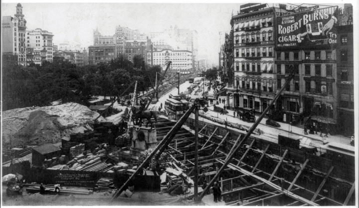

Four main developments occurred during the last decade of the nineteenth century. The first was the spectacular growth of cities. The transformation of urban America accelerated in the 1890s as port cities specializing in connecting the countryside with world markets gave way to the development of factories and financial centers throughout the nation. The second was the growth of a third-party movement known as Populism. Farmers and some urban workers united to form a class-based movement because they believed that their interests were not being met by the nation’s two political parties. Although the Populists would be a political force for only a brief moment, their ideas would greatly influence ideas about government and the nature of American politics. The third development was the growth of institutionalized racial discrimination. Segregation of white and black Americans moved from custom to law in the 1890s. This development illustrated a hardening of racial prejudice, but also demonstrated that black Americans were becoming wealthier and more assertive. Although segregation had existed in the past, by the 1890s Southern legislatures began passing ordinances that compelled racial separation by law. These laws were a response by racial conservatives who feared that black women and men were progressing in ways that might threaten the racial hierarchy. They were especially concerned that the new generation who had never known the “civilizing” effects of slavery must be compelled to keep “their place” at the bottom of Southern society.
The fourth development was the physical growth of the nation and the acquisition of overseas territories. In 1800, the nation was a loose confederation of sixteen states with a total population of 5 million souls. By 1900, 75 million Americans belonged to a global empire that stretched across the continent and effectively controlled much of Alaska, Cuba, the Philippines, Puerto Rico, Hawaii, and Guam. Ever aware of their own historic struggle against colonialism, American leaders claimed that they had no interest in creating an empire. The history of Western expansion demonstrated otherwise, even if few of the nation’s leaders considered the acquisition of land from Native Americans in these terms. In addition, Americans pointed out that the newly acquired islands in the Caribbean and Pacific had requested US assistance in their revolution against Spain. The United States promised that it was unique from all the other world powers. In some ways, America would live up to these promises by granting limited self-government to these areas or incorporating them into the nation and extending citizenship to inhabitants. When it came to the nonwhite peoples of the Caribbean and Pacific, however, the United States believed it could not grant full independence until the inhabitants proved that they were “ready” for democracy. In places like the Philippines, the inhabitants demonstrated an unwillingness to wait for self-government. Perceiving US troops as occupiers rather than liberators, Filipinos rose in armed rebellion. In other places, American imperialism was dominated more by a desire for commercial development and military bases. In these islands, inhabitants enjoyed a higher degree of autonomy even if their claims to national independence remained unfulfilled.
The population of New York City quadrupled between the end of the Civil War and the start of World War I, as 4 million souls crowded into its various boroughs. Chicago exploded from about 100,000 to earn its nickname as the “Second City” with 2 million residents. Philadelphia nearly tripled in this same time period to 1.5 million. Before the start of the Second Industrial Revolution, even these leading cities served the needs of commerce and trade rather than industry. Early factories relied on waterpower, and the location of streams and falls dictated their location. By the 1880s, factories were powered by steam, allowing their construction near population centers. Soon the cityscape was dotted with smokestacks and skyscrapers and lined with elevated railroads.
The skyscraper was made possible by the invention of steel girders that bore the weight of buildings, which could be built beyond the limit of 10 to 12 stories that had typified simple brick buildings. Passenger and freight elevators were equally important. The price of constructing skyscrapers demonstrated the premium value of real estate in the city center. By 1904, Boston and New York completed underground railways that permitted these areas to expand—a marvel of engineering that required few modifications to the rapidly changing city. These early mass transit systems accommodated the proliferation of automobiles in the next two decades by removing trolley lines from the increasingly crowded streets.
These elevated and subterranean railroads (called the “el” or the “subway,” respectively) transported residents between urban spaces that were increasingly divided into separate districts. City planners mapped out districts for manufacturing, warehouses, finance, shopping, and even vice. Those who could afford it could purchase a home in the suburbs—outlying residential districts connected to the city by railways and roadways. Unlike the rest of the city, these neighborhoods were limited to single-family homes and included parks and even utilities such as plumbing and electricity. Suburbanites could also enjoy the pastoral trappings of America’s rural past with lawns and gardens. The daily commute seemed a small price to pay for the reduction of crime and pollution that was endemic within the city center. A suburbanite might even remain connected to the city through the proliferation of the telephone—still a luxury in the 1890s, but one that expanded to several million users within the next decade. However, the majority of urbanites were crowded into tenements that housed hundreds of people that might not include luxuries such as plumbing, ventilation, or more than one method of egress to escape a fire.
One in six Southerners lived in cities by 1900, and most blocks were occupied by either black or white families. The same phenomenon of residential segregation was still emerging in the North. In sharp contrast to the black population of the South, the majority of whom remained on farms and plantations, the vast majority of African Americans in the North lived in towns and cities. Both Northern and Southern cities contained one or more black-owned business districts. Most black communities with more than a few thousand black residents boasted their own newspaper, numerous doctors, a few attorneys, and a variety of stores and restaurants. Segregation encouraged the growth of these business districts where black shoppers were treated with dignity and at least a few black office clerks, professionals, and sales staff could find steady employment. Lingering prejudices and the desire to maintain language and culture sustained similar ethnic neighborhoods and business districts within Northern cities.
Figure 3.1
This 1902 photo shows continuing work being done to construct an underground rail system in New York City.
Swedes and Germans began to constitute the majority of residents in upper-Midwestern cities near the Great Lakes, and nearly every major city had at least a dozen newspapers that were printed in different languages. Although many Americans lumped immigrants together based on their language and nationality, immigrants sought association with those who were from the same region. In many parts of Europe, major cultural differences and old rivalries separated people who were countrymen only due to recent political realignments of Europe. As a result, dozens of fraternal and mutual-aid associations represented different groups of Germans, Italians, Poles, and Hungarians. Jewish residents likewise maintained their own organizations based on their culture and religion. As the migrants moved to smaller cities, Sicilians, Greeks, and northern and southern Italians might set aside old hostilities and see each other as potential allies in a strange land. Ethnic communities, such as San Francisco’s Chinatown and Baltimore’s Little Italy, might appear homogenous to outsiders. In reality these neighborhoods were actually melting pots where various people of Asian and Italian descent lived and worked.
The growth of cities was also the result of migration from the American countryside. In 1890, the US Census eliminated the category of “frontier”—a designator referring to areas with population densities below two people per square mile, excluding Native Americans. By this time, nearly every acre of fertile public land had already been sold or allotted. In response, historian Frederick Jackson Turner drafted a paper advancing an idea that would soon be labeled the Frontier ThesisAn idea proposed by historian Frederick Jackson Turner in 1890, which argued that the frontier shaped US history. Turner saw the frontier as “the meeting point between savagery and civilization.” At this westward-moving border, Turner believed that American society was constantly reinvented in ways that affected the East as well as the West.. Turner argued that the existence of the frontier gave America its distinctive egalitarian spirit while nurturing values of hard work and independence. For Turner, America’s distinctiveness was shaped by Western expansion across a vast frontier. At the frontier line itself, Turner argued, Americans were faced with primitive conditions, “the meeting point between savagery and civilization.” The result was a unique situation where the West was both a crucible where American character was forged and a safety valve for the overpopulation and overcivilization of Europe. Those who subscribed to Turner’s idea questioned how the elimination of the frontier might alter the direction of American history. Others recognized the congruity between Western expansion and urban and industrial life. Modern critics point out that Turner failed to recognize the agency and contributions of Native Americans and argued that his reliance on the mythic frontiersman also neglected the importance of families, communities, government, and commerce within the West.
To the frontier the American intellect owes its striking characteristics. That coarseness and strength combined with acuteness and inquisitiveness…What the Mediterranean Sea was to the Greeks…the ever retreating frontier has been to the United States.…And now, four centuries from the discovery of America, at the end of a hundred years of life under the Constitution, the frontier has gone, and with its going has closed the first period of American history.
—Historian Frederick Jackson Turner
Despite the “closing” of the western frontier in 1890, a new generation of Americans would see new frontiers throughout urban America. During the next three decades, these pioneers sought ways to improve sanitation and healthcare, provide safer conditions for workers and safer products for consumers, build better schools, or purge their governments of corruption. One of the leading urban reform projects was the attempt to eliminate certain criminal behaviors. Every major city and most small towns had their own vice districts where prostitution, gambling, and other illicit activities proliferated. These districts were usually restricted to one of the older and centrally located neighborhoods where upper- or middle-class families no longer resided. For this reason, vice was often tolerated by city authorities so long as it confined itself to these boundaries.
Vice was profitable for urban political machines that relied on bribes and the occasional fines they collected through raids. These limited attempts at enforcement filled city coffers and presented the impression of diligence. Police and the underworld often fashioned an unspoken understanding that vice would be tolerated in certain neighborhoods that were home to racial and ethnic minorities. A Jewish writer recalled playing on streets patrolled by prostitutes who advertised their services “like pushcart peddlers.” Innocence was an early casualty of a youth spent on Manhattan’s Lower East Side. “At five years I knew what it was they sold,” the writer explained. Children in multiethnic neighborhoods from Minneapolis to Mobile experienced similar scenes as the police “protected” brothels and gambling houses in exchange for bribes. In fact, most prostitution dens were located near police stations for this very reason.
Anne “Madame” Chambers of Kansas City provides a model example of the collusion between vice and law enforcement at this time. Chambers used the police to deliver invitations to her various “parties” to area businessmen. The police were also paid to guard the door of her brothel in order to protect the identity of her guests. Most clientele were not residents of the vice districts themselves but middle- and upper-class men who reveled in the illicit pleasures of Kansas City’s tenderloin district. Others engaged in the spectator sport of “slumming,” observing the degraded condition of inner-city life as a means of reveling in their own superior condition. Whether they partook in or merely observed the illicit pleasures of the red-light district, the physical separation of vice from their own quarantined neighborhoods provided both physical and ideological insulation from the iniquities of the city. A businessman could disconnect himself from the actions committed in the various tenderloin districts of his city and then return to his own tranquil neighborhood. Unlike the immigrant or the nonwhite who could not find housing outside of vice districts, the middle-class client retained the facade of respectability because of the space between his home and the vice district that quarantined deviance in poor and minority neighborhoods.
In many cases, a house of this type is a haven of last resort. The girls have been wronged by some man and cast out from home. It is either a place like this or the river for them…After a while they began to have hopes, and no girl who has hopes wants to stop in a place of this type forever, no matter how well it is run and how congenial the surroundings.
—Madame Chambers, reflecting on her life operating houses of prostitution in Kansas City between the 1870s and 1920s
These underworlds were host to both gay and straight. The legal and social fabric of the late nineteenth century equated homosexuality with deviance and therefore quarantined all public displays of homosexuality to the vice districts. Homosexuals at this time lived closeted lives outside of these spaces, although they described their own experience as living behind a mask rather than within a closet. In fact, historians have not found examples of the phrase “closet” in reference to gay life until the mid-twentieth century. Gay men and women of this era sought to create safe spaces where they could take off those masks. They created code words and signals such as “dropping hairpins”—a phrase referring to certain signals that only other homosexuals would recognize. To recognize and to be recognized by others permitted these men and women to “let their hair down”—another coded phrase referring to the ability to be one’s self. Because all homosexual behavior was considered illicit, gay men and women found the vice districts both a refuge and a reminder of the stigma they would face if they ever removed their mask anywhere else.
Although vice neither defined nor typified urban life, the police and political machines concentrated vice in ways that made it more noticeable while furthering America’s suspicion of urban spaces. Reformers hoped to do more than simply quarantine these establishments, pressing for tougher enforcement of existing laws while pushing for tougher prohibition measures against alcohol. The Progressive Era of the early twentieth century saw a unified effort to purge the city and all America of vice. In the meantime, a small group of reformers in the late nineteenth century believed that the best way to combat vice was to improve the condition of the urban poor. Most urban communities were already home to collective efforts to start daycares and educational outreach programs, long before the middle-class reformers took an interest in their plight. In many cases, churches provided partial financing for such institutions, while the women of a particular community volunteered their time watching children or teaching classes in English or various job-related skills. By the 1890s, middle- and upper-class women were increasingly involved in such efforts. Deriving their inspiration from European settlement houses that provided homes and/or social services such as daycare for working mothers, a host of American men and women brought the settlement house movement to America. The most famous of these was Jane AddamsA leader in the emerging field of social welfare, Addams observed settlement houses in London and used this knowledge to found Chicago’s Hull House in 1889. Addams also organized against child labor and was an outspoken opponent of the United State’s entry into World War I, an unpopular position at the time but one that led to her being awarded the Nobel Peace Prize in 1931..
Figure 3.2

Jane Addams was a pioneer of the settlement house movement in America, founding Hull House in Chicago. Addams was awarded the Nobel Peace Prize in 1931.
Addams was born into a wealthy family who viewed the purpose of college for women as a sort of literary finishing school that would prepare one’s daughter for marriage. They were shocked when their daughter returned from college expressing the desire to pursue an advanced degree, fearing that such a path would make it unlikely that their aging daughter would ever find a suitable husband. Undaunted, and refusing to abandon the development of her mind, Jane Addams studied medicine and the burgeoning field of social welfare. She toured the settlement houses of London and resolved to create similar institutions in the United States. In 1889, Addams secured and remodeled a mansion in Chicago called Hull House. Addams lived and worked at Hull House with her intimate friend Ellen Gates Starr and a variety of other women. Together, these women assisted poor mothers and recent immigrants who also resided at Hull House. Some of the social workers, such as Florence Kelley, were committed Socialists. However, most were short-time residents who came from wealthy backgrounds and were studying social work in college. Together, these college women and career reformers taught classes on domestic and vocational skills and operated a health clinic for women and a kindergarten for children. Before long, Hull House had become a community center for the largely Italian neighborhood it served. The Progressive Era of the early 1900s saw the expansion of the number of settlement houses, with approximately 400 similar institutions operating throughout the country.
Other settlement houses in Chicago and throughout the nation were directly affiliated with collegiate social work programs. This was especially true of historically black colleges such as Hampton Normal and Agricultural Institute (known as Hampton University today) in Virginia. Here, alumna Janie Porter Barrett founded the Locust Street Settlement House in 1890, the first of such homes for African Americans. Before this time, local organizations affiliated with the National Association of Colored Women’s Clubs (NACWC)Organized at a meeting held by Josephine St. Pierre Ruffin in Washington, DC, in 1896, the NACWC was formed as a national organization to promote and coordinate the activities of local African American women’s organizations throughout the nation. These activities included personal and community uplift as well as confronting segregation. took the initiative in providing social services within the black community. The NACWC was formed in 1896, but most of the local chapters predated the merger and had been active in creating orphanages, health clinics, schools, daycares, and homes for the elderly African Americans who were generally unwelcome in institutions operated by local and state governments. These women also created homes for black women attending predominantly white colleges throughout the North. For example, the Iowa Federation of Colored Women’s Clubs purchased a home where black students attending the University of Iowa and Iowa State University could live. They even discussed the merits of sponsoring special schools to help black women prepare for college. They soon abandoned this plan for fear it might be misunderstood by whites as an invitation to reestablish the state’s Jim Crow schools, which had been defeated by three state Supreme Court decisions in the 1860s and 1870s.
Figure 3.3

Activist, educator, writer, and leader, Mary Church Terrell was the first president of the National Association of Colored Women’s Clubs. She earned a master’s degree and taught at Ohio’s Wilberforce College, spoke multiple languages, and was a leader in the fight to desegregate the schools and the restaurants of Washington, DC, where she lived and worked for much of her life.
Advances in transportation and communication created national markets for consumer products that had previously been too expensive to ship and impossible to market outside of a relatively small area. Companies such as the Great Atlantic and Pacific Tea Company opened A&P retail outlets, while Philadelphia’s John Wanamaker pioneered the modern department store. Discounters like Woolworth’s offered mass-produced consumer goods at low prices at their “nickel and dime” stores. Department stores like Sears soon began marketing some of their smaller and more expensive items, such as watches and jewelry, through mail-order catalogs. By 1894, the Sears catalog had expanded to include items from various departments and declared itself the “Book of Bargains: A Money Saver for Everyone.” Isolated farmers and residents of towns not yet served by any department store suddenly had the same shopping options as those who lived in the largest cities. The Sears catalog and the advertisements of over a thousand other mail-order houses that emerged within the next decade shaped consumer expectations and fueled demand. By the early twentieth century, an Irish family in Montana might be gathered around the breakfast table eating the same Kellogg’s Corn Flakes as an African American family in Georgia. These and millions of other Americans could also read the same magazines and purchase items they had never known they needed until a mail-order catalog arrived at their doorstep.
Marketers recognized that they could manufacture demand just as their factories churned out products. Trading cards were distributed to children featuring certain products. Newspapers and magazines began making more money from advertising than from subscriptions. Modern marketing became a $100-million-per-year industry by the turn of the century, employing many of the brightest Americans producing nothing more than desire. The distribution of these advertisements extended beyond lines of race, region, and social class. Indeed, aspiration for material goods and the commercial marketplace that fueled this desire may have been the most democratic American institution. For some families, participation in the marketplace also became a reason to take on extra work. For others, the emergence of marketing was just another cruel reminder of their own poverty in a land of plenty.
Figure 3.4

Begun as a small circular offering watches and jewelry for sale by mail, the Sears Catalog quickly expanded to include hundreds of items. The catalog stimulated consumer desire, spurred by the advent of free rural mail delivery in 1896 and the company’s unique “money-back guarantee.” Years after its founding, a company employee predicted the catalog would become a primary source for historians by providing “a mirror of our times, recording…today’s desires, habits, customs, and mode of living.”
In addition to the retail outlets and mail-order houses, national brands emerged and offered products such as Coca-Cola, Crisco, and Quaker Oats. Traveling salesmen sold many products, from vacuum cleaners to life insurance and investments. The rapid growth of a national market for many of these products meant that many opportunities for miscommunication arose. Many companies simply hired more salesmen in hopes of turning their regional businesses into national empires. Rapid expansion meant that executives in distant home offices could do little more than issue guidelines they hoped their salesmen would follow. These individuals often established their own terms and prices that were designed to increase sales and their own profit margins. For example, salesmen of Captain Frederick Pabst’s beer figured out they could increase their own profit by adding water to the kegs of beer they sold. America’s taste for lighter beers was hardly a tragic consequence. For the family who invested all they had in watered-down stock or the widow who purchased a life insurance policy that did not offer the benefits she had been promised, such frauds held dire consequences. As a result, companies that delivered a consistent product and succeeded in protecting their brands from the potential avarice of their own sales staff developed national reputations. Before long, the reputation of such brand names became the most valued asset of a corporation.
Like the corporations and mail-order houses that sprang forth during the late nineteenth century, spectator sports expanded from local contests organized around gambling during the antebellum period to become big business by the turn of the century. Boxing remained controversial in the 1890s, but it was also popular—extremely popular. The emergence of international icons such as the first true world heavyweight champion John L. Sullivan helped the sport to enter the mainstream of American culture. The son of Irish immigrants, Sullivan celebrated his heritage at a time when the Irish were heavily persecuted in America. Sullivan’s reputation for toughness was forged in the days of bare-knuckle brawls that ended only when one man yielded. These grueling fights were banned by the turn of the century, but stories of the Irish heavyweight champion’s grit lasted long after his first major defeat in 1892—an event that corresponded with Sullivan’s first use of boxing gloves. Although boxing moved toward respectability with the addition of gloves and rule-making associations, baseball retained its title as the most popular sport in America.
The Cincinnati Red Stockings became the first salaried team in 1869. By 1890, there were three major leagues, dozens of regional and semipro leagues, corporate sponsors, and crowds in excess of 10,000 spectators. The color line was drawn tightly in baseball, boxing, and other sports from the beginning, but it was never complete. Contrary to myth, Jackie Robinson was not the first African American to play in Major League Baseball. That honor belongs to Moses Fleetwood Walker, a catcher for the Toledo Blue Stockings of the American Association in 1884. At least one light-skinned individual of partial African heritage “passing” for white predated Walker, while dozens of players from Latin America who also had African ancestors played throughout the early twentieth century. One of the more elaborate demonstrations of the malleability of the color line occurred in 1901 when legendary Baltimore manager John McGraw signed Charlie Grant. Grant was a star of several African American teams who played in the barnstorming era of black baseball—the period before the formation of the Negro National League in 1920. An informal ban barred black players shortly after Moses Fleetwood Walker left Toledo because of the racism he endured. As a result, McGraw required Grant to adopt the name “Tokahoma” and pretend to be a Native American. The ruse did not last long, however, as Chicago’s emerging black neighborhoods within the city’s South Side gave such a friendly reception to Tokahoma that Chicago manager Charles Comiskey recognized the deception and refused to play the game if Charlie Grant took the field.
The greatest athlete at this time was likely a Native American who played professional baseball and football in addition to winning the decathlon in the 1912 Olympic Games. Jim Thorpe was born on Oklahoma’s Sac and Fox Reservation and was sent to a number of boarding schools. Like most athletes, he played semiprofessional baseball to help pay for his expenses and escape the military discipline and manual labor of the Indian Industrial School in Carlisle, Pennsylvania. This boarding school was designed to assimilate Native Americans into the dominant Anglo culture. Unfortunately, even though Thorpe needed to earn money to support himself while a student at Carlisle, the Olympic committee decided to enforce the ban against “professional” athletes on Thorpe. The Committee stripped Thorpe of his medals, despite the fact that many other Olympians had also played for money. During the 1980s, a campaign waged by historians and college students convinced the Olympic Organizing Committee to restore Thorpe’s medal posthumously.
Figure 3.5

Jim Thorpe was born on the Sac and Fox reservation in Oklahoma and is widely regarded as the greatest athlete in the history of sport.
Thorpe also led Carlisle to victory over most of the top college football programs in the nation. College football was second only in popularity to professional baseball at this time. College football rivalries were legendary by 1902 when Michigan defeated Stanford in the first Rose Bowl. Attendance at this game demonstrated that that the sport had progressed from the first college football matches of the 1870s that were informal challenges by student clubs who played by an ever-changing set of rules. By the 1890s, college football was the topic of conversation each weekend—among both enthusiasts and those who sought to ban the rough game. Early college football lived somewhere on the border between rugby and boxing, with little or no protective clothing. The introduction of the forward pass helped to spread the players across the field and reduced the number of crushed ribs at the bottom of the scrum. However, the rule change also added to the speed of the game, leading to concussions as players hit one another at full stride. In 1891, James Naismith, a physical education teacher in Springfield, Massachusetts, invented a new team sport that resulted in fewer injuries and could be played indoors during the cold winter months. He hung up two bushel baskets and had his students try to throw a soccer ball into the baskets. He would later coach college basketball at the University of Kansas.
The crowds at popular sporting events developed chants and songs to cheer along their team. The most famous song of all was “Take Me Out to the Ball Game,” by a Tin Pan Alley composer. Colleges developed fight songs by taking popular melodies and adding their own lyrics or by altering popular fight songs such as “Oh Wisconsin” to include their own mascot and school. The University of Michigan’s fight song “The Victors” was also “borrowed” heavily by area rivals. The original lyrics celebrated the team as “Champions of the West”—an indication that the future Big Ten schools were still viewed as “Western” at the turn of the century.
While popular chants were often very similar from college to college, students and community members usually added elements of local flavor. For example, the chalk-rock limestone walls of the buildings that then formed the University of Kansas inspired students to change “Rah, rah, Jayhawk” into “Rock Chalk, Jayhawk.” Games with neighboring Missouri rekindled the historic feud where Southern bushwhackers killed antislavery leaders and burned the Free State Hotel of Lawrence. Missourians emphasized that the original Jayhawkers had also crossed into their state, usually liberating more whiskey and horses than slaves despite the historic memory of Lawrence as a Free State stronghold. Professional football failed to draw such community identity and remained on the margins until the mid-twentieth century. By 1900, college football was an institution, basketball was gaining popularity, and baseball in all its forms was the national pastime.
The New York City neighborhood where the melodies of many of college fight songs and other tunes were written became known as Tin Pan Alley. The name may have derived from the “tinny” sound of the dozens of cheap upright pianos. Or it may be related to the cacophony of sound that resembled the reverberations of tin cans in a hollow alley as the neighborhood’s composers and sheet music publishers experimented with different sounds. From these alleys could be heard a new kind of music known as ragtimeA uniquely American form of music that featured “ragged” rhythms and a strong beat that compelled its listeners to dance or at least tap their feet. Its structure flouted conventional theories about music at the turn of the century. This genre inspired improvisation and gave birth to other forms of music such as jazz., a genre that blended black spirituals with Euro-American folk music. Made famous by urban composers, ragtime was born in the taboo world of red-light districts and interracial dance halls. In these hidden joints, white and black musicians created a uniquely Southern sound. Ragtime would soon spread to the black-owned halls of the North. Oral histories indicate that these melodies sounded just slightly off whenever whites imposed their presence on the early jazz halls of the upper Midwest. For all of its crushing oppression, ragtime was at home in the Deep South where black and white had always lived in intimate closeness to one another. The region’s language, food, and music reflected both the tensions and the bonds that forged generations of creole culture. A distinctly Southern form of expression, ragtime celebrated this fusion without apology and gave birth to the second uniquely American form of cultural expression—jazz music.
The most famous composer and performer of the era was Scott JoplinAn African American composer who was among the great innovators that created ragtime music. Joplin was born in Texas and traveled throughout the South, living and teaching music in Missouri and a host of other states as well as Northern cities such as Chicago., an African American who toured black communities from New Orleans to Chicago years before most of white America discovered ragtime. Thanks to the spread of new technologies, ragtime would be enjoyed in recorded form by many young white Americans, much to the chagrin of their parents. Within a few years, a growing number of white composers and artists added their talents to ragtime and joined traveling black musicians in spreading the new sound throughout the globe. Other white musicians, such as John Phillip Sousa, utilized the tempo of ragtime to create popular band music. Sousa specialized in stirring marches for military bands. The band director of the United States Marine Band, Sousa traveled the nation. Soon his “Stars and Stripes Forever” became one of the most beloved patriotic songs in America.
Figure 3.6

“Maple Leaf Rag” was Scott Joplin’s first successful composition. Joplin’s music was spread by the sale of sheet music and the popularity of this song led to the spread of ragtime as a uniquely American genre of music.
For those who preferred the theater, American audiences were treated to thousands of touring troupes who played several shows per day in every town large enough to draw an audience. The actors of these troupes had to be flexible, performing classical Shakespeare one afternoon and a vaudeville-type variety show a few hours later. The vaudevilleA type of variety show that became one of the most popular forms of entertainment at the turn of the century. A vaudeville show might feature sketch comedy, music, and burlesque dancers. show included songs, dance, slapstick comedy, and usually a chorus line of dancing women whose outfits left less to the imagination as the evening wore on. The more risqué, the better the chance a troupe would play to a full house each night. The exhortations of those who believed the theater to be the tool of the devil usually inspired more souls to attend these cabarets. The most popular form of entertainment at this time was the melodrama—an exaggerated style of morality play that demonstrated the persistence of Victorian standards of thought. The melodrama featured dastardly villains, damsels who constantly fell into distress, and daring men who never stooped to the antihero’s methods to save the day. An even larger-than-life type of live performance was the traveling circus. Most attendees of P. T. Barnum’s circus agreed that he delivered on his promise to provide audiences with the greatest show on earth.
Figure 3.7

Buffalo Bill poses with a group of Native Americans who performed in his touring shows that celebrated the “Winning of the West.”
Traveling circuses and vaudeville shows increasingly sought to present epic stories from US history. No topic was more popular that the fictionalized image of the West. As the last bands of Apaches and Lakota were annihilated or placed onto reservations, a sort of curious nostalgia emerged regarding what most assumed was a “vanishing race” of American Indians. The general public no longer vilified Native Americans once they no longer represented a perceived threat. However, few at this time attempted to understand Native American experience from their own perspectives. Ironically, a man with tremendous respect for native life and culture became the architect of a traveling exhibition that reduced the complexities of Western history into a cabaret. William Frederick “Buffalo BillWilliam “Buffalo Bill” Cody was a cowboy and scout for the military who also became a leading showman. Buffalo Bill’s traveling Wild West shows combined sentimental Western history with vaudeville entertainment that thrilled crowds around the globe.” Cody’s Wild West Show thrilled audiences with displays of horsemanship, sharpshooting, and other rodeo skills by cowboys and cowgirls. But the main attraction and the reason millions in Europe and the United States paid to attend Buffalo Bill’s show were the “Indian attacks” on peaceful settlers that brought out the cavalry. For most Americans, Buffalo Bill’s sanitized and simplified reconstruction of “How the West Was Won” substituted for the real history of the American West. Audiences cheered as the cavalry gallantly rounded up the “rogue” Indians in a display of showmanship where no one really got hurt.
During the 1880s, farmer’s collective organizations known as the Grange declined, as did the Greenback Party. However, the twin ideals of monetary reform and legislation beneficial to farmers were carried on by a new organization called the Farmers’ AllianceThe Farmer’s Alliance was a national federation of autonomous local farmer’s organizations that sought to represent the interests of their members. Even more than the National Grange, which preceded them, the Farmer’s Alliance had a heavy influence on politics between Reconstruction and the turn of the century.. The alliance was similar to the Grange, and in fact, some local chapters of the alliance had previously been affiliated with the Grange. The first alliance chapter was organized in Texas and quickly expanded to include over a hundred chapters by the early 1880s. The alliance had spread so rapidly due to its outreach/education program that contracted with traveling lecturers. These individuals earned commissions when they organized new alliance chapters. The alliance also affiliated with various existing farmer’s associations and formed partnerships with nearly a thousand local newspapers, most of which were already in print. By 1888, there were 1.5 million alliance members nationwide. This rapid growth was greatly facilitated by the decision of existing organizations to affiliate with the Farmers’ Alliance. For example, the Agricultural Wheel had been formed in Arkansas and attracted half a million members in other Southern states. In this way, the alliance was slightly different from the Grange. Its base of membership was local, and its chapters were autonomous. Perhaps more importantly, the alliance welcomed women over the age of sixteen as full members, as well as white tenant farmers and sharecroppers. The alliance would occasionally work with leaders of the Colored Farmers’ National AllianceDue to the exclusionary policies of the Farmer’s Alliance, black farmers formed the Colored Farmers’ National Alliance at a meeting in Texas during 1886. The organization grew quickly and had as many as a million members at its peak., an organization that grew to a million members and remained independent of white alliances.
Women were especially active in the alliance, a unique feature of the organization when considering the conservatism of the South and rural West. Despite ideas about separate spheres of activity for women and men, female alliance members chaired meetings, organized events, and delivered lectures. A significant number of women held key leadership positions in local and state offices within the alliance from the Deep South to California. Most strikingly, women were full members of most alliance chapters in an age when most women could only participate in “men’s” organizations as members of separate female auxiliary chapters. The efforts of female alliance members were usually phrased in conservative terms that stressed traditional roles of protecting the home and children. However, the entities the home needed protection from were banks and railroads. Participation in the alliance placed women in the public realm of political activity, circulating petitions and holding debates in support of new laws.
Because the Grange represented only landowners, their efforts had been largely dedicated to cooperative efforts to create stores, grain elevators, and mills. Alliance chapters engaged in these economic activities as well, and women operated dozens of the alliance cooperative stores. The alliance was even more active than the Grange had been in the political realm. Because its membership was more economically diverse, many of its chapters sought more radical reforms on behalf of poor farmers and landless tenant farmers. For the alliance, securing legislation protecting landowning farmers from the monopolistic practices of banks, commodities brokers, and railroads was only the beginning.
In 1887, the lobbying efforts of the nascent alliance, along with other farmers’ associations, led Congress to pass the Interstate Commerce ActA law demanded by farmers and passed in 1887 that required railroads to establish standard fares and publish these rates. This prevented the informal pricing practices that often discriminated against small farmers who had few options when it came time to ship their grain to the market.. The law required railroads to establish standard rates and publish these prices. It also prohibited railroads from giving free passes or other benefits to try and sway lawmakers and journalists from being favorable to railroad interests. The law also required that these rates be “reasonable and just” and created the Interstate Commerce Commission to regulate the business practices of railroads. These were seemingly commonsensical government reforms from the perspective of farmers, especially given the practices of some unscrupulous railroad operators. Prior to 1887, railroads could arbitrarily raise rates around harvest time or charge different rates to different customers to win the business of large firms. Small farmers had little chance of getting such discounts.
By 1890, a similar reform movement was being waged by small businesses and consumer advocates. These groups lobbied for the passage of the Sherman Anti-Trust ActA federal law passed in 1890 that gave the government the power to break up corporations that it believed were acting in restraint of free trade by forming monopolies or engaging in other practices that allowed firms to artificially raise prices., a law aimed at reducing the power of monopolies. Supporters of the new law believed that businesses, which should naturally be competing with one another, were often secretly working in concert to reduce competition by forming trusts. For example, the Beef Trust was an arrangement between the largest beef packers where members agreed not to bid against one another when purchasing livestock from individual farmers. If each leading purchaser of cattle refused to bid against one another, the price of cattle would be kept artificially low to the benefit of the beef packer and the detriment of the farmer. Dozens of trusts also maintained informal agreements against starting “price wars,” where each promised not to lower the price they charged consumers.
Figure 3.8

This satirical “nursery rhyme” depicts the oil trusts as a “modern Bill Sikes,” a reference to a fictional villain in Charles Dickens’s popular novel Oliver Twist.
Corporations defended themselves from their critics by pointing to the inefficiencies that occurred in the past when there were dozens of beef packers, oil refineries, and other competing businesses in every major city. In many cases, prices had declined when these companies merged or affiliated with the various trusts that controlled their industry. Although there was truth in these claims, there was equal validity to accusations of unfair business practices. The Sherman Anti-Trust Act gave the federal government unprecedented powers and empowered it to break up corporations that had formed “combinations in restraint of trade.” This vague phrase was intended to give wide-ranging power to those who sought to enforce the law and dissolve trusts. The new law was hailed as an end to monopoly; however, nearly all of the lawsuits brought under the terms of the law in the next fifteen years were dismissed on technicalities. In fact, corporations actually benefitted from the actions of courts during this time after the Supreme Court redefined the Fourteenth Amendment to defend the rights of corporations against the state.
From the perspective of farmers, the legal system was being commandeered by attorneys representing railroads and trusts. These entities were undermining both the Interstate Commerce Act and Sherman Anti-Trust Act, reformers believed, while the government stood idly by or actively assisted those who represented the trusts. Railroads continued to overcharge small farmers in violation of the Interstate Commerce Act, largely because the law required farmers to initiate a complaint. The understaffed regulatory commission could only investigate a small fraction of these complaints, and even when they believed they had a case they rarely had the resources to match their opposition. The same was true regarding anti-trust acts for ranchers who sold beef or grain to large corporations.
Figure 3.9

Alliance leaders met in Ocala, Florida, during December 1890. A number of local alliance chapters had already turned to political action by this time. For example, these alliance members in Columbus, Nebraska, formed their own political party and nominated a ticket of farmers for local and national office in July 1890.
Despite these frustrations, the partial victory of getting these laws passed and securing a handful of convictions also led to increased political activism among alliance members. In addition, the diminishing price of grain in the late 1880s led a number of farmers to view the alliance as a possible source of protection against economic decline. Alliance-sponsored lecturers continued to travel throughout the rural South and West during these lean years, touting the value of collective action. They also resurrected the ideas of rural Greenbackers and spoke against the gold standard and its tight money supply which kept interest rates high and farm prices low. Already influential in state and local politics in over a dozen states, the National Alliance turned to national politics. In 1890 they held a convention in Ocala, Florida. Their goal was to establish a platform that would unite alliance members from coast to coast. Equally important, alliance leaders sought political partnerships with labor unions and various middle-class reform movements representing the growing urban population. Delegates to the Ocala convention hoped their efforts would lay the groundwork for a new political party that would unite farmers and factory workers and represent the majority of working Americans. The degree to which they succeeded is still a subject of debate among historians.
Delegates to the 1890 meeting drafted what became known as the Ocala Demands, a list of proposed changes to the nation’s political and financial system that challenged the conservative and laissez-faire policies of the era. The National Alliance dominated the Ocala meeting, and most alliance chapters endorsed the Ocala Demands and supported its vision of federal action on behalf of farmers. Chief among these reforms was a proposal to create federally subsidized warehouses where farmers could store their grain until they decided the market price was favorable. Many local alliance chapters had already tried to provide this service for their members, but most had failed in their objective because their members were in debt and could not afford to store their grain for more than a few weeks. Dubbed subtreasuries, alliance members believed these federal warehouses would solve their dilemma by issuing immediate payment of up to 80 percent of the crop’s present value. As a result, buyers would no longer be able to force cash-strapped farmers to sell their grain shortly after harvest. If all farmers participated in subtreasuries across the nation, the alliance argued, brokers and trusts could no longer dictate the price of grain.
The subtreasury planA proposal that was advocated by farmer’s organizations such as local Alliance chapters wherein the federal government would subsidize the construction of grain warehouses where farmers could store their grain in anticipation of better market prices. Farmers believed this would stabilize commodity prices and protect indebted farmers who often had no choice but to sell their grain as soon as it was harvested regardless of market conditions. demonstrated a revolution in sentiment among America’s farmers away from the concept of limited government that had typified Thomas Jefferson’s ideal of rural America. Instead of achieving freedom from government via laissez-faire policies and small government, the idea was now freedom through government via regulation and the subtreasury plan. In addition to this novel innovation, the Ocala Demands included a host of other ideas that had been proposed by both rural and urban reformers in the previous two decades. The delegates called for lower tariffs and greater regulation of railroads, although they stopped short of advocating direct government ownership of railroads. The platform also recommended the reinstatement of federal income taxes, which had been abandoned since the end of the Civil War. Although the wording of the resolution itself was nonspecific, alliance members intended that only the middle and upper classes would pay taxes, with the wealthiest paying higher rates. The Ocala Demands also supported the notion of governmental reform and direct democracy. The current practice at this time was for state legislators to appoint U. S. senators, but the Ocala Demands called for the direct election of US senators by popular vote. Relatively obscure in its own time, the Ocala convention and its demands would shape American political debate for the next decade.
The platform also supported a monetary policy that would soon be known as “free silverThe shorthand nickname given to the idea that the government should print money that was backed by both gold and silver. This would place more money into circulation, which would make it easier to obtain loans and provide a measure of relief for indebted farmers. Opponents believed that abandoning the gold standard would reduce foreign investment and destroy value of the dollar.”—an abbreviation of the phrase “the free coinage of silver.” This phrase simply meant that the US mint would create silver coins and/or print bills redeemable for silver and place them into circulation alongside the existing currency that was backed by gold. The word free simply meant “unlimited” in this context and was meant to differentiate their plan from the Sherman Silver Purchase Act of 1890, which will be described later. Because currency was redeemable for a certain amount of gold, the government could only print an amount of money equal to the total value of gold reserves it controlled. While the population and the total amount of wealth increased each year, new discoveries and purchases of gold lagged behind. As a result, the strict application of the gold standard would mean that there would be such a small amount of currency in circulation that the laws of supply and demand would actually cause the dollar to increase in value each year.
Deflation caused the value of currency to increase over time. Although this sounds good in theory it can have disastrous effects on the growth of the economy. Deflation meant that those who wished to borrow money had to pay very high rates for two reasons. First, the relative amount of currency in circulation was shrinking, which meant borrowers faced stiff competition from other borrowers and lenders could practically name their terms. Secondly, because the value of currency increased each year, banks could also make money by simply hoarding their cash. This deflation of the currency was exactly what those with money wanted, and exactly what indebted farmers feared. For those who have more debt than currency, printing more money and causing inflation would actually bring a measure of relief.
The Sherman Silver Purchase Act of 1890 was intended to provide a small measure of that relief to farmers and others in debt. It required the government to purchase a limited amount of silver each month and then increase the amount of money in circulation by creating silver certificates that would be used just like the dollar. However, the plan did not work because consumers and investors preferred gold-backed currency. To make matters worse, the Silver Act financed the purchase of silver by issuing notes that could be redeemed in either silver or gold. Most holders of these notes immediately exchanged the notes for gold, which did nothing to increase the amount of money in circulation. Worse, these redemptions pushed US gold reserves dangerously low. The result was deflation, panic on Wall Street, and banks further restricting the amount of money they were willing to loan.
Figure 3.10
A political cartoon showing William Jennings Bryan who backed the idea of free silver on a one dollar bill. The bill bearing the image of his opponent William McKinley, a defender of the gold standard, is worth almost twice as much as Bryan’s money. The intended message was that the idea of free silver would cause economic instability. The slogans “We Want No Change” and “Four More Years of the Full Dinner Pail” were meant to support the status quo and the reelection of William McKinley.
Those who favored maintaining the gold standard cited the failure of the Sherman Silver Purchase Act as “proof” that increasing the idea of “free silver” was dangerous. In fairness, the Sherman Silver Purchase Act was not a fair test of the idea because it did not provide for the “free” (unlimited) coinage of silver. More importantly, the Sherman Silver Purchase Act did not treat silver-backed money as regular currency. The Ocala Demands sought to remedy this situation by having US currency backed by both gold and silver. It would create a flexible exchange rate that would eliminate any incentive for speculation or redeeming currency for one metal or the other. It also required the government to issue enough currency backed by silver that at least $50 per capita was in circulation at any given moment.
The alliance also formed partnerships with the Knights of Labor and especially laborers in mining and the railroad industry. Hoping to create a political party representing all productive laborers from the factories to fields, the Populist Party (known officially as the People’s Party) was formed after a series of conventions in 1892. National Farmer’s alliance president Leonidas L. Polk was nominated as the new party’s presidential candidate. Unfortunately, Polk died prior to the party’s national convention which was held in Omaha, Nebraska, in July 1892. Delegates at the Omaha convention nominated the former Greenback leader James B. Weaver in his place. Building on the ideas of the Ocala Demands, delegates created the Omaha PlatformThe formal statement of the policies of the People’s Party (also known as the Populists) that was issued at its formative meeting in Omaha, Nebraska, in July 1892.. This Populist statement of policy was drafted in hopes of uniting the demands of labor unions and the Farmer’s Alliance.
The Omaha Platform of 1892 may have been the most significant political document of the late nineteenth century, even though the Populist Party itself would dissolve within a decade. Although many of its specific regulations regarding economic and agricultural reform were not adopted, the ideas of the Omaha Platform would shape debate for years to come. In addition, many of its provisions would eventually become law. For example, the Omaha Platform called for immigration restriction (adopted in 1921 and 1924), the establishment of federal income tax (adopted in 1913 with the ratification of the Sixteenth Amendment), and the direct election of US senators (also adopted in 1913 with the ratification of the Seventeenth Amendment). The platform also advocated more direct democracy by granting the people the power to submit laws through referendum and the ability to recall elected officials before their term ended. The Omaha Platform also advocated the eight-hour working day, term limits for politicians, use of secret ballots in all elections, and printing money that was not backed by gold. With the exception of government ownership of railroads and telegraph lines, nearly all of the major goals of the Populist were eventually adopted by law or custom.
Figure 3.11

Populist candidate for president in 1892 James B. Weaver and vice presidential candidate James G. Field ran under the banner “Equal Rights to All, Special Privileges to None.” Field was a former Confederate general from Virginia while Weaver was a former abolitionist from Iowa. The two hoped to demonstrate national unity in an era of continued sectionalism in politics.
In the near term, however, the Populists struggled to attract supporters. Populists believed that the Republicans and Democrats both represented the money interest, a term referring to bankers and wealthy corporations who benefitted from the limited amount of currency in circulation. As a result, their platform advocated many of the ideas of the Greenback Party. However, most industrial workers were not in debt as farmers were. They feared inflation would increase prices faster than wages would rise. They also shared many of the same concerns of their employers and feared that altering the nation’s financial system could lead to instability and unemployment.
Figure 3.12

A photo showing armed men who enforced the declaration of a Republican victory in Kansas. A number of Populist leaders had seized control of the statehouse but the doors were broken and these deputized men regained control. Notice that this force included African Americans, who accounted for as many as 20 percent of Republican voters in southeastern Kansas and the state capital of Topeka.
Workers also tended to support tariffs on foreign imports because these taxes protected domestic production. Tariffs are taxes on imported goods. Without tariffs, overseas factories could sell their products in the United States for lower prices. Farmers tended to oppose tariffs because the nation was an exporter of cotton, grain, and other agricultural commodities. When the United States charged tariffs on foreign manufactured goods, other nations retaliated by imposing taxes on American exports. Farmers hoped reducing America’s tariffs would inspire other nations to do the same, reducing the taxes placed on American exports like cotton and grain. In short, farmers and workers may have shared similar experiences, but they often did not share identical financial interests. As a result, the Populist Party struggled to expand from an agrarian movement to one that united both farmers and urban laborers.
Populist presidential candidate James B. Weaver won over a million votes and carried Idaho, Nevada, Colorado, and Kansas in the 1892 election. The Populists also influenced the national election in 1892 when the Democratic candidate Grover Cleveland defeated incumbent Republican Benjamin Harrison—a reversal of the 1888 election in which Harrison had defeated Cleveland. The Republican and Democratic campaigns focused on issues such as the tariff. From the perspective of the Populists, this was only one of many issues and one that distracted from the more meaningful reforms they proposed. On a local level, Democrats and Republicans vied for control of Eastern cities and states, while the rising Populist Party secured numerous victories in the South and West. Populists even claimed victory in a majority of the districts of the Kansas state legislature. However, a three-day “war” between armed Populist and Republican politicians within the state capital led to arbitration and the Republicans ended up claiming a majority of the seats in the legislature.
Figure 3.13

A map showing county-by-county results in the 1892 election. Notice the success of the Populists in the West and the pockets of support for the Populists in the otherwise solidly Democratic South.
The Populists were a growing political force beyond the West. After the 1892 election, Populists controlled a significant number of seats in state legislatures throughout the South as well as the western plains and mountain states. The party even sent 14 delegates to Congress, while a dozen states selected Populist governors for at least one term during the 1890s. The growth of the People’s Party also led to cooperative efforts between members of the two major parties and the Populists. Representatives of the Republicans and Democrats often nominated a single ticket composed of candidates from their party and a handful of Populists. This strategy of two political parties joining together to defeat the dominant party of a particular region became known as fusionIn this context, fusion was the strategy of merging two independent political parties under one ticket in order to increase the likelihood of winning elections.. In Western states such as Nebraska, where the Republican Party was dominant, Populists and Democrats often joined forces. Pockets of Republicanism managed to survive past Reconstruction in Southern states such as Tennessee, Virginia, and Texas, but the Democrats still dominated state politics. In these states, Populists and Republicans used the strategy of fusion to defeat a number of Democratic candidates. Fusion was most effective in North Carolina where black Republicans and white Populists created a fusion ticket and together swept the 1894 legislative and gubernatorial elections.
Despite continuing efforts to keep black voters from the polls, over 100,000 black voters cast ballots in each state of the Deep South in the early 1890s. As a result, white Southern Populist leaders from Texas to Virginia worked to mobilize black voters in ways that saw limited cooperation across the color line in politics for the first time since the end of Reconstruction. White Populist leaders agreed on the need to unite farmers and laborers, but they remained hesitant to embrace people of diverse racial and ethnic backgrounds for fear of being labeled as “radicals.” This issue was especially problematic in the South. Although some Southern whites recognized that they shared common economic and political interests with African American farmers and sharecroppers, white alliance leaders rarely cooperated with black leaders. In most cases, the failure to cross racial lines proved the Achilles’s heel of Southern Populism. At other times, the economic interests of white and black farmers were not identical. For example, some white farmers owned land that was rented to black sharecroppers and tenant farmers.
Excluded from the Southern alliance, black Southerners established the Colored Farmers’ National Alliance in 1886. In 1891, a group of black cotton pickers around Memphis who were working on white-owned land organized a strike and demanded higher wages during the harvest season. Whites lynched fifteen leaders of this strike. The local white alliances were silent on the matter despite the fact that each of these men had been members of the Colored Farmers’ National Alliance. At other times, white and black farmers shared the same concerns. For example, a boycott against jute producers crossed the color line and spread from Texas to Georgia. Jute was used to produce the sacks that protected cotton bales. When an alliance of jute producers conspired to raise their prices, black and white alliance members throughout the South united and made their own bags from cotton until the “jute trust” backed down.
Historians have often been tempted to exaggerate the degree of cooperation between white Democrats and black Republicans in the South during the 1890s. Georgia’s white Populist leader Tom WatsonA leading Southern Populist, Tom Watson was an editor and Georgia politician who sought to unite poor white Southerners against the elite landowning families he believed still controlled the state through the Democratic Party. spoke forcibly against the methods some Democrats had used to intimidate and disfranchise black voters in the past. He and other white Georgia Populists even defended the life of a black politician from an armed white mob. However, Watson and nearly every other white Populist of the South were firmly committed to white supremacy and saw their partnership with black voters in tactical terms. They opposed the fraud and intimidation of black voters only when it was used against black men who supported the Populist Party. White Populists believed they were “educating” black voters by lecturing them about how voting for the Populist ticket would aid white farmers and landlords, providing benefits that would “trickle down” to black sharecroppers. If landlords could avoid paying high rates to railroads and men who controlled commodities markets, they argued, the landlords could then pay black tenants and sharecroppers higher wages.
From the perspective of black voters, Southern Populists were not much different from Southern Democrats who tolerated black suffrage so long as black voters agreed to vote as instructed. If the Populists spoke out against the knight-riding tactics that were similar to the Klan’s, it was largely because those tactics had favored Democrats in the past and were beginning to be used against white Populists. At the same time, the fact that some white Populists in the South sought a degree of cooperation with black political organizations made Southern Populists different from the Democratic Party. As a result, Southern black voters sought to maintain their independence and distance, but also sought tactical partnerships with white Populists.
Figure 3.14 Marion Butler of North Carolina
North Carolina’s Marion Butler personified the racial tensions and tactics of white Populists. As a leader of his county chapter of the Southern alliance, Butler edited a Populist newspaper called the Caucasian. The masthead of Butler’s paper originally exclaimed “Pure Democracy and White Supremacy.” However, this was removed when the Populists decided they could advance their interests by courting black voters. Butler recognized that the only way to defeat the heavy majority enjoyed by the Democratic Party in North Carolina was to form a partnership with the Republican Party, even if it still contained many political leaders from the Reconstruction Era. Butler agreed to head a fusion ticket in 1894, including a number of white and black Republican leaders among white Populist candidates. Black Republicans and white Populists united behind the ticket, which swept the state. The Populist victory in North Carolina resulted in Butler’s election to the US Senate at the ripe old age of thirty-two. It also brought hundreds of local alliance leaders into the Populist-dominated state legislature. The Populist victory also resulted in George Henry White’s election to the US House of Representatives. White would be the last black Southerner to serve in Congress until the 1970s.
Progressive for its era and region, race relations in North Carolina would soon implode. The astounded Democrats launched an offensive against Butler and white Populists as traitors to their race. Ironically, Butler’s position as a defender of white supremacy should have been clear. Butler and the rest of the white Populist leaders were outspoken in their beliefs that black men and women were inherently inferior to whites. If Populists were different from Democrats in terms of race, Butler explained, it was because they were “not in favor of cheating and fraud” to exclude black voters. The Democrats shared no such reservations and branded Butler as a liberal who favored interracial marriage. They also created Red Shirt clubs that promised to redeem white women from the indignity of purchasing stamps from the handful of black postmasters the Populists had appointed.
The Red Shirts then decided to use force to take control of the local government, much like what white mobs had done in Louisiana during Reconstruction. They destroyed the homes and businesses of black leaders and precipitated a massacre in Wilmington in November 1898. Officially known as the Wilmington Race RiotAn outbreak of violence against African Americans and black businesses in Wilmington, North Carolina, following the defeat of the Democratic Party in November 1898. Republicans and Populists had joined together to sweep the elections, but many of the victorious candidates were forced to give up their positions or simply fled the city for their lives., Red Shirts murdered a dozen black men, ransacked black communities, and burned the office of the African American newspaper the Wilmington Daily Record. The violence was anything but random, as Wilmington was the largest city in the state and contained a black majority that had just defeated the Democratic Party’s local candidates in the November election. Dedicated to controlling the entire state, white Democrats ran many of the few remaining Republican-Populist officials out of town and took control of the state legislature by force.
Only in the wake of such atrocity could North Carolina Populists be viewed as racial moderates. Populists were willing to give black voters a separate and subservient place in political and economic life. In return, they expected black voters to express their gratitude at the polls by supporting white candidates. In exchange for convincing men of their race to “vote properly,” a handful of black leaders might be appointed to minor offices. Black voters understood the limitations of their Populist “allies.” From the perspective of many black voters, however, fusion with the Populists could result in tactical gains such as funding for black schools and laws that might encourage fair treatment for sharecroppers.
Figure 3.15

The remains of the offices of the Wilmington Daily Record in the wake of the 1898 Wilmington Race Riot.
In the end, even this possibility for limited cooperation and tactical gains was derailed as North Carolina Democrats launched a malicious campaign. Black voters faced lynch mobs, the homes of black leaders were attacked, and white Populists were labeled Yankees and “lovers” of black women and men. Few white Populists were racial liberals, but these racial accusations were repeated with such frequency and intensity that truth became irrelevant. These accusations were also very effective. The Democrats swept the 1898 elections in North Carolina and enacted poll taxes that prevented all sharecroppers and tenants without access to cash from voting.
In 1900, North Carolina followed the pattern of establishing subjective literacy tests as a requirement for all voters. The tests empowered white registrars to disqualify black voters, regardless of their educational level. Given the recent campaigns against him, Butler phrased his opposition to the literacy test very carefully. Between various calls for white supremacy and his newfound desire to eliminate the menace of black suffrage, Butler meekly pointed out that literacy tests might unintentionally disfranchise hundreds of thousands of white voters. In response, the senator was subjected to death threats and labeled as a traitor to the white race. The Democratically controlled North Carolina legislature recognized that Butler’s argument was valid even as they excoriated him. They quietly responded by adopting a grandfather clause that effectively exempted whites from the literacy tests.
Populists in various other Southern states were likewise removed from office by many of the same methods. For example, Texas had been one of the leading states for Southern Populists until the adoption of the poll tax in 1902, a law that reduced the ability of poor farmers to vote. In 1923, Texas adopted a new technique to limit the effectiveness of black voters. The state created a system of primary elections in which only members of a particular party could vote. The direct primary was hailed as a progressive measure because it empowered the members of a party, rather than its leaders, to select their candidates. However, the Democratic Party restricted its membership to whites. Federal law did not permit such distinctions to be made in the general election, but the laws were silent regarding racial restrictions in private political organizations at this time. Even though black men could still legally vote in the general election, it mattered little because whoever won the Democratic nomination would easily defeat any candidate backed by minority voters or the nominal Republican Party of Texas. Black and Hispanic voters protested, but state and federal courts ruled that the Democratic Party could restrict membership however it chose. Attempts to declare the white-only primary a violation of the Fourteenth and Fifteenth amendments failed until 1944.
The decline of Southern Populism effectively ended the last meaningful and independent black participation in Southern public life until the mid-twentieth century. In response to claims of “negro domination” that mirrored the fears expressed by Redeemers during Reconstruction, white Southern Democrats revived and expanded the violence black voters. They also passed “reforms” to voting laws that were intended to bar African Americans. As a result, black voters were marginalized in the South for the next three generations. Poll taxes eventually excluded many white voters as well. However, poor whites and poor blacks continued to oppose one another and plant more cotton. Although they were all trapped in a cycle of downward mobility, the region’s elites successfully kept poor people divided against each other. However, these elites struggled with their own dilemmas, victims themselves of a colonialist model of finance that forced them to borrow at high rates. The South continued to grow cotton at depressed prices, a course of action that impoverished nearly everyone in the region and discouraged investment and innovation.
We are born in a Pullman house, fed from the Pullman shops, taught in the Pullman school, catechized in the Pullman Church, and when we die we shall go to the Pullman Hell.
—Alleged statement of a Pullman resident during the 1894 Pullman Strike.
It would become clear by the late 1890s that fusion with the major political parties was a short-sighted strategy. In 1892, however, the Populists were becoming increasingly influential in state and local politics throughout the West and the South. To capitalize on this momentum and become a significant force in national politics, the Populists would have to do better at attracting urban voters and Northern farmers. This presented a host of challenges given the often-competing economic interests of farmers who owned land and equipment and laborers who worked for wages. In addition, Populist leaders would have to overcome cultural traditions that divided Northerners and Southerners, and transcend the cultural divide between rural and urban America.
Finally, the Populists needed to find a way to resolve tensions between the ethnically, racially, and religiously diverse citizenry and their base within the Farmer’s Alliance, which were predominantly old-stock Anglo Protestants. From a strictly tactical point of view, the Populists did not have to secure the support of black voters or any particular ethnic group to become a national political party. However, the People’s Party could not succeed if it failed to secure a significant foothold among the workforce of urban America, which was becoming increasingly diverse. These voters tended to support local political machines that provided immediate and tangible benefits to their communities. Most urban dwellers were unenthusiastic about some aspects of the Populist platform that were designed to benefit farmers, especially plans to increase farm prices through federally financed warehouses.
Given these obstacles, the Populists were relatively successful in crafting a class-based message based on the solidarity of all workers and farmers against bankers and Capitalists. This success was partially due to a lingering recession that began in the early 1890s and became a full-fledged depression in 1893. The depression would linger until the late 1890s. Similar to the railroad speculation that triggered the economic problems of the 1870s, the Panic of 1893A financial crisis that was spurred by railroad speculation. The Panic of 1893 led to high unemployment and a depression that lasted for several years. began when leading railroads declared bankruptcy. By the end of the year, 500 banks had failed and unemployment neared 20 percent. Farmers had experienced several years of depression before the Wall Street crash, while industrial workers faced declining pay.
Figure 3.16

An engraving depicting barges burning during the Homestead Strike, which is listed as the “Homestead Riot” by the publisher of the magazine that printed these images in 1892. Students should consider the implications of referring to the event as either a “riot” or a “strike.”
The most patent example of labor strife before the Panic of 1893 occurred in the steel mills of Pennsylvania. In the spring of 1892, a plant owned by Andrew Carnegie in Homestead, Pennsylvania, reduced pay just as a hard-won union contract was coming to an end. Management had anticipated the workers’ decision to strike and stockpiled warehouses full of finished steel in advance. Management also contracted with the Pinkerton detective agency to escort strikebreakers into the factory. The intent was to crush the union, which had secured the previous contract with a strike. The aging Andrew Carnegie was genuinely distressed about the resulting violence, yet did nothing to intercede with the decisions of the plant managers. After workers armed themselves and seized control of the plant, managers of the Homestead plant hired replacement workers and Pinkerton guards. The striking men clashed with the Pinkertons and sought to keep the replacement workers from entering the plant. Several men died in the conflict which was later crushed by federal troops. Most of the formerly unionized workers that survived the Homestead StrikeOccurred in 1892 when steelworkers in Homestead, Pennsylvania, were locked out of their mills following demands for higher pay. The conflict turned violent in early July when workers clashed with armed guards hired by Carnegie Steel, leaving a dozen people dead and leading to the deployment of National Guard troops. meekly accepted the reduced pay, twelve-hour shifts, and elimination of their union. From the perspective of the workers in Pennsylvania, any tears the distant Andrew Carnegie cried for those who died at his plant were crocodilian.
A businessman in Ohio named Jacob Coxey was outraged by the Homestead Strike. In addition to his sympathy for the laborers, Coxey believed that the federal government should borrow money and provide temporary jobs until the economy recovered. Although this idea would serve as the basis of the New Deal response to the depression of the 1930s, the notion was considered radical during the depression of the 1890s. Coxey was an outstanding promoter, however, and led a group of a hundred workers who marched from central Ohio to the nation’s capital to ask for jobs. By the time they arrived, their numbers had grown to several hundred, and they were joined by several thousand other unemployed men who launched their own journeys to Washington, DC, from communities across America. The media dubbed these men “Coxey’s ArmyA group of several hundred protesters who marched to the nation’s capital in 1894 in support of the ideas of Ohio politician Jacob Coxey. These Ohioans were joined by hundreds of others who believed that the federal government should provide temporary jobs following the Panic of 1893. However, Coxey’s ideas were not seriously considered and his “army” was turned away..” The federal government treated them as invaders. Coxey was arrested for “trespassing” on what was actually pubic land, and most of his followers returned to their homes.
Coxey’s Army inspired Populist supporter L. Frank Baum to write the novel The Wizard of Oz based on Coxey’s efforts and the Populist message. Although its political meaning was soon forgotten, Baum intended the Scarecrow to represent farmers, the Tin Man to represent industrial workers, and the Cowardly Lion to embody political leaders who often lacked the courage to represent their constituents over powerful outside interests. Overcoming these shortcomings, the three characters unite with Dorothy—a female personification of the purity of the American people and the strength of Populism in the Great Plains. Together, they marched along the yellow-brick road, which symbolized the gold standard as measured by ounces (abbreviated as “oz”). Together, they withstood the sinister plot of the wicked witch. The witch represented the money interests of the East that sought to divide farmers, workers, and political leaders. The four heroes finally reach Oz and meet the Wizard, a small man who hid behind a facade of smoke and mirrors. In the end, the only way home was for Dorothy to click her heels together. Although modern audiences remember those shoes as being ruby red, they were actually silver in the original novel and represented the Populist goal of free silver as a panacea for the nation’s economic woes.
The Knights of Labor endorsed the Populist Party, but their numbers had declined substantially following a number of strikes that had been crushed by federal and state governments during the last two decades. Other unions were hesitant to back the Populists. Skilled workers at this time joined craft-specific unions that were affiliates of the American Federation of Labor (AFL)A national federation of independent craft unions that was formed after a meeting in Columbus, Ohio, in 1886. Leaders of most of the nation’s largest unions were present at this meeting and agreed to join the AFL to coordinate their activities and increase their political clout., a national confederation of independent unions, which had been founded in 1886 by Samuel GompersFounded the AFL and led that organization from 1886 until his death in 1924, with the exception of a period between 1894 and 1895 when members of the organization revolted against his leadership because of his lack of support for the People’s Party.. The AFL focused on tactical goals, such as pay increases, through collective bargaining and strikes. The AFL was relatively successful in this regard, and the 250,000 skilled workers it represented by 1892 had enjoyed modest pay increases prior to the start of the depression. However, these wage increases would not last and the majority of laborers were not eligible to join the AFL.
Gompers’s union remained more conservative than groups such as the Knights of Labor. The AFL generally excluded women and minorities and rejected ideas such as collective ownership of factories. Many AFL leaders were reluctant to join the Populists, especially Gompers. The AFL leader specifically warned its members about the potential dangers of affiliating with any political party, especially an unknown quantity like the Populists. For a few years in the mid-1890s, however, some AFL members rejected Gompers and his advice and supported the Populists.
A major strike was launched during the depression by a union that was more radical than the AFL, the United Mine Workers (UMW), which was formed in the summer of 1894. The workers had two main demands: First, the return of wages to previous levels, and second, that these wages would be paid in cash. In the wake of bank failures and depression, it was difficult and expensive to finance operations in US dollars. This difficulty led mining companies and some factories to issue their own currency known as scripCurrency that is issued by an employer or some other organization and is not a legal tender.. This employer-issued currency was not legal tender. As a result, miners and factory workers who were paid in scrip could only redeem their paychecks for goods at company-owned stores. These goods were usually overpriced. Payment in scrip also prevented workers from moving or finding new jobs because they had no cash. Others became dependent on credit accounts that had been opened on their behalf at the company store.
Figure 3.17
An image depicting American Railway Union leader Eugene Debs as “King Debs” during the Pullman Strike. In this anti-union image, Debs is depicted as preventing the movement of railcars that were full of food while factories were forced to sit idle for lack of coal and other supplies.
Although the UMW had only 15,000 members, miners were part of a unique culture that stressed brotherhood and mutual aid. These principles were a matter of life and death given the dangers of mining and the importance of teamwork in completing their daily work. This brotherhood inspired solidarity behind the strike and also led miners to march from one mine to another to spread the word of their activities. By May, a strike that began only weeks earlier had grown to include an estimated 250,000 miners nationwide. Many eastern miners in Pennsylvania were subjected to violence from hired men known euphemistically as “detectives.” The miners gave as good as they got in skirmishes in West Virginia, Illinois, and Ohio. In the isolated coal fields of Colorado, thousands of miners marched hundreds of miles to spread word of the strike and support one another. However, in the lean times of the depression, the mines still offered better pay than many jobs that were more susceptible to the forces of supply and demand. As a result, the operators successfully resisted union demands in the 1890s. The strikes cost the companies hundreds of thousands of dollars in lost revenue in addition to the expenses of hiring the police force that was used to break the strikes.
A second major strike occurred in 1894 involving the Pullman Palace Car Company near Chicago. Industrialist George Pullman experimented with a theory called welfare CapitalismA system where private employers provide services for the welfare of their workers, such as health care and other benefits., building a factory town to house the workers who built his passenger railcars. Pullman believed the brutal living conditions and high rents workers endured in cities were a leading cause for their unhappiness. He hoped that by creating a model city and paying for all of his workers’ expenses, he would avoid labor strikes and command a loyal workforce. By establishing a factory in the countryside with fresh air and no access to alcohol, Pullman believed, Illinois would be home to a healthy and sober workforce with unparalleled productivity.
The factory town of Pullman featured relatively spacious living quarters, a beautiful library and church, and a store where workers could purchase items on credit. Employee purchases at the store, as well as rent, were deducted from their paychecks. Pullman’s welfare Capitalism was less liberal, however, when it came to freedom of expression. He did not tolerate dissent or even independent organizations or meetings in his town. He employed inspectors who watched the employees to make sure they abided by his standards of clean living and were not organizing any kind of labor movement. Although outsiders marveled at the order and cleanliness of this factory town, workers resented the controlling aspects of their employer. Still, as long as wages were high, most at least appeared to agree with middle-class observers who considered industrial workers “lucky” to live in work in a town like Pullman.
The depression reduced the demand for Pullman’s luxury railcars, and the factory responded with layoffs and pay cuts. These cuts were not accompanied by reduced rents or prices in the company store. As a result, workers were faced with conditions that resembled what sharecroppers faced—they had little or no pay once their rent and expenses were deducted. Many of Pullman’s employees were members of the American Railway Union (ARU) led by Eugene DebsAn Indiana politician who became one of the leading national figures in labor and political history from the 1890s to the early 1920s. Eugene Debs was a founder of the American Railway Union and led the Pullman Strike. He would later grow more radical in his criticism of the Capitalist system and represent the Socialist Party as its candidate for president in several elections.. In May 1894, the ARU supported a local strike of Pullman workers. More significant was Debs’s nationwide strike of all ARU members who refused to work on any train that included cars made by the Pullman Company. The potential significance of the Pullman Strike was clear: by mobilizing all workers within an entire industry, a strike began by workers at a single company could have national implications.
By July, the nation’s rail traffic had slowed substantially due to the large number of Pullman railcars. Even if rail companies agreed to isolate the Pullman Company, its thousands of railcars could not simply be placed on sidetracks. The federal government responded by ordering the strike to end and mobilizing troops to force railroad workers to follow the orders of their bosses. When this gambit failed, the government required trains with Pullman cars to also transport the US mail. If workers refused to work on these trains, they could be charged with the federal crime of interfering with the US mail.
President Grover Cleveland vowed to end the strike by any means possible. “If it takes every dollar in the Treasury and every soldier in the United States Army to deliver a postal card in Chicago,” he declared, “that postal card should be delivered.” The US attorney general broke the strike by securing a court order demanding an end to the strike because by slowing rail traffic the unions were acting to restrain trade. This was a provision of the Sherman Anti-Trust Act that was originally intended to limit the power of corporations and trusts rather than labor unions. However, because one union—and a controversial union leader such as Debs—had succeeded in disrupting the nation’s transportation network, it appeared to many as if the ARU had become too powerful.
With the intervention of the federal government, the Pullman StrikeIn response to a decline in wages, workers at the factory town of Pullman, Illinois, declared a strike in the summer of 1894. They were supported by Eugene Debs and the American Railway Union, whose members declared their intention to make sure no railcar made by the Pullman Company moved until the wages of their fellow workers were restored. Believing that the strike was derailing economic recovery, the federal government used the army to end the strike. was crushed and train traffic resumed its previous volume. The union at the Pullman factory was broken, and ARU and union activism in general suffered a major defeat. Had the Pullman Strike been successful and if unions were permitted to use sympathy strikes such as Debs had intended, the balance of power between workers and corporations might have been drastically altered. Instead, the workers who had participated in the strike were fired. Some were even blacklisted, meaning they were branded as “troublemakers” and their names placed on a list that was circulated to other employers. Debs himself was sent to jail for six months for his violation of an earlier court order. His sentence did not curtail his growing radicalism, as the union leader began envisioning the creation of a utopia in the West. Five years later, Debs turned to Socialism in hopes of fulfilling his dream of worker solidarity.
Figure 3.18
This turn-of-the-century illustration proposes the idea that consumers were the victim of conflicts between labor and management. The image depicts conflict between a Capitalist labeled “Commercial Trust” and a worker labeled “Labor Trust” who is wielding a club labeled “Strike.” On his knees between the two is a helpless “Consumer” who appears to be begging for mercy.
A small strike in the coal fields of western Missouri and eastern Kansas in 1899 demonstrated the folly of excluding workers of a particular race or ethnicity. Management of the Kansas and Texas Coal Company intentionally recruited only black workers in hopes of convincing their lily-white workforce that all would be permanently replaced if they did not end their strike immediately. Railroad management circulated handbills throughout the South that advertised Missouri and Kansas as “the paradise for colored people.” While these circulars urged Southern blacks “to join your friends in the land of plenty,” the reception these men received was anything but friendly. The 1,200 black men who arrived in the region on special trains that summer immediately recognized that their reception might be slightly less friendly than promised. Their convoys stopped to pick up armed guards, and management instructed the riders against looking out of their windows. A Midwestern sheriff demonstrated a much stronger prejudice than typified Southern lawmen, threatening to prevent blacks from entering his city “if it takes deputizing every man in Cherokee County [Kansas].” As a result, the miners were housed in stockades guarded by state troops and Pinkerton guards. If western Missouri and eastern Kansas was paradise for black men, one new arrival reportedly exclaimed, this was “as near as [he] ever wanted to get to heaven.”
You come to us and tell us that the great cities are in favor of the gold standard. I tell you that the great cities rest upon these broad and fertile prairies. Burn down your cities and leave our farms, and your cities will spring up again as if by magic. But destroy our farms and the grass will grow in the streets of every city in the country…having behind us the producing masses of the nation and the world. Having behind us the commercial interests and the laboring interests and all the toiling masses, we shall answer their demands for a gold standard by saying to them, you shall not press down upon the brow of labor this crown of thorns. You shall not crucify mankind upon a cross of gold.
—Speech of William Jennings Bryan at the Democratic convention in Chicago, July 8, 1896.
The Populists increased their nationwide tally of votes by 40 percent between 1892 and 1894. Their largest percentage gains were in the industrial cities of the Midwest, demonstrating that they were on their way to expanding beyond a purely agrarian movement. A third of the ballots cast in Minneapolis were for Populist candidates, while 20 percent of voters had cast their ballots in Milwaukee, and 12 percent of Chicagoans supported the Populists. Coal-mining districts were even more enthusiastic, with over half of the voters in areas of western Pennsylvania voting for Populist candidates. As encouraging as these results were for those hoping to expand their base beyond Western farmers, national Populist leaders recognized that they had not yet unified Southern agrarians and the nation’s workers.
Part of the problem was that Northern urban Populist leaders like Eugene Debs and Wisconsin’s Victor Berger were perceived as radicals by many farmers. From the perspective of many farmers, Debs had tried to halt rail traffic simply to prove his power. The endorsement of Populism among radical unionists such as Debs also made the People’s Party more susceptible to charges of Socialism, although Debs himself opposed Socialism at this time. From the perspective of urban workers, Populist demands for government control of railroads and the subtreasury plan were vast increases of government power that would only aid farmers. In addition, many of the more radical urban Populists endorsed limited plans for collective ownership of factories that seemed socialistic to farmers who owned land. The Populists, however, could not simply distance themselves from radical labor leaders because they represented many of the unionized workers the Populist’s were seeking to appeal to during the lean years of the depression. As a result, the Populists were growing nationwide but were still not a unified national party in 1894.
In 1896, the Democrats held their national convention in Chicago two weeks before the Populist convention. The Democrats adopted the doctrine of free silver, as the “people’s currency.” They promised voters that free silver would stimulate investment in the cities, raise the fortunes of indebted farmers, and even offer benefits to business interests, although this final provision was left conspicuously unspecific. They also nominated the young and energetic William Jennings BryanA charismatic Nebraska politician who became the presidential nominee of both the Populists and the Democrats in 1896. Bryan would be nominated by the Democrats in two subsequent elections but was never able to defeat his Republican opponent in any of these three elections. of Nebraska, a charismatic politician who would soon earn a national reputation as the “Boy Orator of the Platte.” Bryan may have known little at first about how free silver would solve the problems of the nation. “The voters of Nebraska are for free silver and so I am for free silver,” he allegedly claimed, promising only “I will look up the arguments later.” However, Bryan was likely being facetious as he delivered hundreds of speeches in which he explained how increasing the money supply would benefit workers and farmers. The fiery and homespun manner he used to address crowds demonstrated that politics was as much about personalities as it was platforms. As a result, a more accurate statement might have been that Bryan was for free silver and, therefore, the people were for it as well. Whether his listeners ever looked up the economic arguments Bryan’s ideas depended on was anyone’s guess.
Figure 3.19

A widely circulated cartoon, this image depicts the Populists and William Jennings Bryan as a serpent that is consuming the Democratic Party. Ironically, the Populists were the ones that were swallowed up by their fusion with the Democrats in 1896. Four years later, the People’s Party scarcely existed while Bryan headlined the Democratic ticket.
A sizeable number of Democrats who supported President Cleveland and the gold standard were so upset with their party’s choice of Bryan that they walked out of the convention. Many of these conservative, progold Democrats would later support the Republican candidate. The Populists were equally stunned, meeting in St. Louis and debating which of their options was less self-destructive. The Populists could issue a platform and nominate a candidate that was similar to the Democrats—a measure that would almost surely produce a Republican victory. The other option was to endorse Bryan and urge their supporters to vote for the Democratic candidate this election year. The danger of national fusion, of course, was that their fledgling party might be swallowed up by the Democrats. In what may have appeared as a compromise, the Populists chose to endorse Bryan but reject the Democrat’s vice presidential candidate. Instead, they nominated Georgia’s Tom Watson for vice president. The Democrats refused to snub their original vice presidential candidate, Arthur Sewall of Maine. As a result, Populists voted for Bryan and Watson, while Democrats voted for Bryan and Sewall. As a result, some observers feared a constitutional crisis if the Populists won without a clear vice presidential selection. The issue would become even more clouded if Bryan passed away.
Neither scenario occurred, at least not in 1896. William McKinleyA Republican governor and congressman from Ohio, McKinley was nominated for president in 1896 and defeated the fusion candidacy of William Jennings Bryan in 1896. McKinley represented conservative business interests and the gold standard and convinced many working-class voters that conservative economic policies would benefit them by assuring economic growth. accepted the Republican nomination and backed a platform built on probusiness policies. Chief among these was the maintenance of the gold standard. McKinley’s campaign resonated with bankers and the wealthy who expressed their apprehension with the prospect of a William Jennings Bryan administration by making generous donations to the Republican Party. Bryan tried to make up the difference with an active campaign. The thirty-six-year-old traveled though nearly two dozen states, standing atop a platform on his modified railcar at each rail stop and giving as many as a dozen speeches per day. McKinley ran his campaign through correspondence from his Canton, Ohio, home. The Republicans used their money and influence to spread two messages. The first was a positive one, stressing the soundness of currency backed by gold and the strength of America’s international credit because of the nation’s adherence to the gold standard. The second was less uplifting, likening Populism to Communism. Other negative propaganda claimed that the only way to ensure “a full dinner pail” was to avoid the destruction of industry and currency that the Populists and the harebrained Bryan would unwittingly introduce.
It had been a few years since the worst economic times of the Panic of 1893. The economy was slowly recovering, and farmers and workers were less inclined to believe the Capitalist system was failing them in the fall of 1896. At the local level, the Populists gained modest support among workers but their growth stalled in the West. The Populists also lost ground in North and South Dakota, Nebraska, Colorado, and Idaho after rejecting fusion with local Democrats. In what would prove to be a harbinger of the future, Republican and Democratic candidates in each of these states swept back into office by adopting some of the most popular aspects of the Populist platform as their own.
The wealthy and the middle class within the Northeast, as well as a slight majority of the laborers and even the farmers of this region, voted for McKinley out of fear of what inflation might do to the national economy. The South and the farmers of the Midwest supported Bryan, but it was not enough. The popular vote was relatively close, but 7.1 million Republican voters indicated the prevailing belief that abandoning the gold standard was a risk the nation should not take during a period of gradual economic recovery. McKinley’s message of prosperity through stability had carried the day. On a state and local level, the Populists still controlled many offices. They elected twenty-two men to the House of Representatives and controlled five senate seats. However, the Republican victory despite fusion doomed the Populists as a national party. State and local Populist parties mostly disappeared by 1900. However, Bryan and the ideas of the Populists lived on. Bryan would be the Democratic nominee for president in two of the next three elections. He and other politicians representing the two major parties would adopt many of the goals of the Populists, and many of these ideas would be enacted by a new group of reformers during these twelve years.
Ellis Island was opened in 1892. This small island within the New York harbor became the port of entry for about half of the immigrants to the United States in the next two decades. Those who were able to purchase regular tickets were entitled to proper sleeping quarters and were met on board by processing agents. These US immigration officials asked a few questions before permitting these immigrants to disembark. Those who could not afford a regular ticket were restricted to the steerage section of the boat and slept among the cargo.
These individuals faced closer scrutiny by immigration agents. Unlike their more affluent shipmates, these immigrants were directed through various checkpoints and holding areas constructed throughout Ellis Island. Among these checkpoints were rapid medical examinations aimed at preventing the introduction of contagious diseases to the country. The worst of these tests was for an eye disease known as trachoma; it required having one’s eyelids inverted. After the medical exam, inspectors asked each immigrant a list of questions. If an immigrant’s name was too difficult for the inspector to spell, it might simply be changed. The final question was the trickiest and the most dangerous. The immigrants were asked if they had a job waiting for them in the United States. Contract-labor laws prohibited recruiters from “importing” laborers. The law was intended to protect domestic workers from companies who might recruit laborers abroad in an effort to replace their present workforce. As a result, those who answered “yes” might find their last dollar paying for a return journey within the steerage of a cargo ship. For the rest, a ferry transported them to New York City where they hoped to reunite with family members and quickly find a “situation”—the term used at this time to indicate employment.
Most white immigrants who arrived in America before 1880 were from Western Europe. The British, French, Dutch, German, and Scandinavian immigrants are often called old-stock Americans for this reason. This moniker also applies to Protestants from Northern Ireland, and the descendants of all these old-stock immigrants. NativistsNativists hoped to prevent migration of nonwhites, non-Protestants, Jews, and other “new” immigrants from Central and Southern Europe. Ironically, they also shared prejudices against Native Americans who were not part of their vision for a white, Anglo-Saxon, and Protestant America. were individuals who hoped to restrict the migration of non-Protestant immigrants who were not part of this old stock. Nativists retained prejudices against the majority of Irish who practiced Catholicism. Some even viewed Catholic immigration from Ireland as a regrettable consequence of Britain’s failure to vanquish the island. Oral histories of Irish Catholic immigrants recall signs stating “No Irish Need Apply” in employment offices. Historians have not been able to find any clear evidence of such signs. A complete search of the New York Times between the Civil War and 1920 has only found a few anti-Irish provisos in the tens of thousands of help-wanted advertisements. The apparent rarity of actual signs or legally sanctioned discrimination did not make the persecution the Irish faced any less real. In addition, prejudices against people of German origin also remained strong in most areas of the country.
The Wisconsin state legislature passed the Bennett Law in 1889. Among its provisions was a ban on the German language in both public and private schools throughout the state. The old-stock Americans of Wisconsin resented the rapid growth of the German population and especially their cultural traditions related to alcohol. They believed that the public schools could be used to assimilate German children and spread Protestant values and culture, if not Protestant religion directly. Others viewed German schools with suspicion, believing that they were furthering the degradation of American culture and leading the state toward the bilingualism of nearby Canada. German Americans denounced the Bennett Law as a restriction of their freedoms and a Yankee assault on German culture by nativists who forced their values on others. Working with other ethnic Wisconsinites, recent immigrants rallied at the polls and voted for candidates who rescinded the Bennett Law 1891.
Figure 3.20
Prejudice against the Irish remained strong but was continuing to decline during the 1890s. This 1854 employment advertisement stating “No Irish Need Apply” is one of only of few of its kind that historians have found. Nevertheless, the impression remains that such signs were common. In reality, the kinds of discrimination most immigrants endured were usually more indirect.
Prejudice against Irish and German immigrants declined after the 1890s partially because a new group of “despised” immigrants took their place at the bottom of America’s ethnic hierarchy. After 1890, migration from Western Europe slowed considerably and immigrants from Southern and Eastern Europe began arriving in large numbers for the first time. These Jewish, Greek, Italian, Russian, Polish, Slavic, and other immigrants were despised by many throughout Western Europe, and these prejudices were carried across the Atlantic. Old-stock Americans, regardless of whether they were recent immigrants themselves, gave these “new” immigrants something less than a warm welcome to “their” country.
Nativists who opposed “nonwhite” immigration from central and southern Europe, along with other nations beyond Western Europe, formed the American Protective Association in 1887. This group launched hateful campaigns against the Jewish and Catholic migrants who were arriving in larger numbers. A second organization, the Immigration Restriction League, wanted a mandatory literacy test as a requirement for entering the country. In contrast to the English-based literacy tests that future generations of nativists would support, the Immigration Restriction League proposed written exams that were based on an immigrant’s native language. Most of the 20 million European immigrants who arrived in the next two decades had been denied the opportunity to attend school and could not read or write in any language. Although Congress approved a law requiring new arrivals to be able to pass a very basic test in the language of their choice, the law was vetoed by President Grover Cleveland. The president phrased his opposition in the language of egalitarianism and presented America as a land of opportunity and refuge for all who were willing to work. However, he was also under heavy pressure to veto the law by business interests who saw the new immigrants as a valuable source of cheap labor.
The federal government did not pass mandatory literacy tests for prospective immigrants, but nine Western and Northern states enacted English-based literacy tests for prospective voters. These exams were intended to prevent non-English speaking immigrants from voting. Perhaps recognizing the possible incongruity of their actions, few whites from these states protested as the South passed additional laws aimed at preventing African Americans from voting. As described in a previous section, the fusion of white and black voters in North Carolina and other Southern states had threatened the interests of the Democratic Party and many of the Bourbon elite they represented. Similar measures were adopted by other Southern states much earlier than North Carolina. For example, Florida’s 1885 poll tax placed a heavy financial burden on sharecroppers and laborers of all races who desired to participate in elections.
Beginning with Mississippi in 1890, Southern states held special conventions and rewrote their state constitutions to add provisions such as poll taxes. These conventions also added subjective measures designed specifically to keep black voters from the polls. For example, the Mississippi convention added an “understanding clause,” requiring voters to interpret a clause of the new constitution to the satisfaction of the registrar, who was presumably white. Despite continued violence and fraud, 130,000 African Americans in Louisiana were still able to cast votes in the 1896 elections. The fusion of white and black voters under the Populist banner threatened the Democratic Party’s control of Louisiana. The state legislature responded by adopting a new constitution that included literacy tests and the grandfather clause in 1898. By 1900, there were only 5,000 registered black voters in Louisiana.
Grandfather clauses and poll taxes kept poor voters of all races from the polls and thwarted movements such as Populism that sought to unite voters based on economic issues. Literacy tests reduced the number of eligible voters, but illiteracy was not the real issue in Louisiana and other Southern states. For example, there were only a few thousand registered black voters in Alabama in 1900, even though census records for that year recorded over 100,000 literate black men in state. The adoption of the white primary negated the effectiveness of minority votes in states that were dominated by a political party that explicitly sought to uphold white supremacy. As a result, few black voters were willing to submit themselves to literacy tests and pay poll taxes to participate in general elections that did not matter.
Between 1890 and 1908, every Southern state adopted poll taxes and other measures intended to restrict black suffrage. In many cases, the wealthy viewed the tendency of poll taxes to also reduce the number of poor white voters as a bonus. By emphasizing white supremacy, poor white voters had effectively disfranchised themselves by approving new state constitutions that enacted the poll tax. By 1920, Mississippi had only 60,000 voters participate in its general election. South Carolina recorded almost half this number. Northern states with similar populations recorded five to ten times the number of votes for the same number of presidential electors and representatives in Congress. As a result, wealthy white Southerners found that their votes carried more weight than Northerners (even when compared to the antebellum days when slaves were counted as three-fifths of a person in determining population and congressional apportionment).
Northern states were not immune from prejudice. California voters adopted an amendment to their state constitution in 1894 that allowed registrars to challenge the literacy of any potential voter. In such cases, the voter would have to read a hundred words of the state constitution to the satisfaction of the registrar. Few doubted that the registrar would select individuals to challenge by considering race and ethnicity. Eight other Northern states adopted similar provisions during this era as a deliberate measure to take the vote away from Hispanic citizens and recent immigrants.
In many cities, voting districts were gerrymandered by white Protestants who concocted ways to put nearly every Catholic and minority resident into one district. In other areas, voting districts might be drawn to ensure majorities for a particular party in nearly every district. Gerrymandering could be subtle, but some voting districts contained significantly more residents than others as a means of diluting the electoral power of certain voters. GerrymanderingThe process of drawing electoral districts or other boundaries in such a way as to favor one group. For example, the potential importance of minority voters could be limited by creating voting districts that placed a small number of minority voters in a number of districts or simply placing them all in one district that still had a white majority. was common in the South but was especially endemic in Northern, Southwestern, and West Coast cities with large immigrant populations. From Mexican Americans in Los Angeles to the sizeable Catholic population of Maine, voting districts were usually drawn in ways that diluted the strength of minority communities.
“We had to do it!” exclaimed a white Democrat in explaining how his Georgia county with 1,500 registered voters somehow recorded 6,000 votes in 1894. “Those damned Populists would have ruined the country.” For many whites, the possibility of “negro domination” was far more than a political concern and justified lawlessness beyond voting fraud. For many, it even justified murder. Lynching—the killing of a person without trial, usually in retaliation for an alleged crime or other infraction—peaked with nearly two hundred lynchings annually between 1890 and 1910.
Lynchings of alleged thieves had occurred in the frontier in the past, but nearly every lynching after the turn of the century was racially motivated. About 10 percent of these racially motivated lynchings occurred outside of the South, meaning that the percentage of black victims in comparison to the total black population was similar throughout the country. Lynchings occurred in a number of “liberal” Northern and Western communities, even those such as Quindaro, a neighborhood of Kansas City, which was founded by abolitionists. Lynchings also occurred in rural areas of the West and cities with small black communities, such as Duluth, Minnesota. However, lynchings were usually rare in cities with a sizeable and well-organized black working class, such as Baltimore and Philadelphia. It is likely that this was related to the likelihood of retribution against the would-be perpetrators in these cities.
Figure 3.21

Perhaps the most disturbing aspect of this photo of a lynching is that it was used as a postcard, indicating community sanction of the killing that had taken place. This particular lynching of three men occurred in Duluth, Minnesota, a chilling reminder that lynching was not limited to the South.
About half of the lynchings during this time period were carried out against men who allegedly raped white women. Although there was occasionally strong circumstantial evidence to suspect the guilt, in many cases the charges were quite unbelievable. Black civil rights activists Ida WellsBorn into slavery during the Civil War and forced to abandon formal education in order to provide for her family, Wells eventually became a teacher, civil rights leader, newspaper editor, and international lecturer. She was arrested for refusing to give up her seat on a Southern railroad in 1883 but was most famous for her tireless but unsuccessful efforts on behalf of a federal antilynching law. documented the details of lynching cases, demonstrating that in many cases the victim had never even been accused of a crime beyond refusing to kowtow to white supremacy. She also argued that in many instances where interracial sex had actually occurred, it was consensual until the relationship was discovered. Wells argued that the potential community shame led some white women to accuse her lover of rape. In such instances, the outpouring of community support for the “victim” was overwhelming. White women demanded that white men take action to protect the spotless virtue of the alleged victim, many times a lower-class woman who had never been considered for the pedestal she was now placed on. Such women soon found their elevated position a lonely existence, especially when their former lover or any other unfortunate black man the howling mob came across was lynched.
For many angry lynch mobs, it was usually insufficient to simply kill their victim. Crowds of thousands of men, women, and children watched and participated in a symbolic orgy of community-sanctioned violence. An example from a Midwestern city demonstrates how quickly this violence could denigrate into a grisly ritual. Fred Alexander, a man who may have been mentally disabled and had lived his entire life in Leavenworth, Kansas, after being accused of rape was forced to eat his own genitals before his body was riddled with bullets, dragged through the streets, hung from a light pole, and then set on fire. A coroner’s jury declared that Alexander had been killed by “persons unknown,” although many whites had taken home pieces of his charred flesh for souvenirs. Many times, the body was paraded through the black community, a grizzly reminder that white supremacy must not be challenged. The only evidence against Alexander was that he had been seen by the victim who heard a man whistling just before the crime had taken place. As the local paper explained, everyone in the town knew Fred Alexander “had a habit of whistling.”
Ida Wells was born into slavery in 1862 and lost her parents at age sixteen due to yellow fever. She raised her five younger brothers and sisters by working as a teacher, supplementing her abbreviated formal education with a love of books and learning for its own sake. She stood up to segregation, refusing to give up her seat on a railroad in 1883 and then suing the Chesapeake and Ohio Railroad after she was dragged from the car by two men. Wells sued the rail company and won, although the Tennessee Supreme Court later reversed the decision. Years later, the state of Tennessee and the rest of the South passed laws specifically permitting, and in many cases, requiring segregation in public transportation and most other public areas of life. Wells continued her confrontation of the color line, becoming an editor and an owner of the black newspaper the Memphis Free Speech, while continuing her work as a mentor of local children and a leading intellectual.
Her new job permitted Wells the resources to research the hundreds of lynchings that occurred each year and to compile statistics. She asked whites to consider why interracial rape, which had been almost unknown in the past, had suddenly become the greatest danger to Southern white women. For Wells, and for most thinking people, lynchings were not really about alleged crimes, but were rather a communal fete of white supremacy. Wells demonstrated how victims were often individuals who refused to abide by the expected racial codes of the South. A black man or woman who attempted to vote or hold office, started a successful business, or simply refused to move out of the way of a white person on a narrow sidewalk could be the next victim.
Figure 3.22
Ida Wells was a leader of the antilynching movement. In 1892 she published a book entitled Southern Horror: Lynch Law in All Its Phases, which documented the frequency and consequences of lynching.
After a friend of Wells was lynched in 1892, Wells printed an editorial suggesting that interracial sex in the South was neither uncommon nor always rape. That she was correct mattered little. A mob destroyed her printing press and would have likely lynched Wells had she not been in Chicago at the time. She did not return to the South, but instead traveled worldwide and lectured about the problem of lynching. She also led the movement to make lynching a federal crime. Because local courts rarely convicted whites for lynching in the North and seldom even bothered arresting anyone for these murders in the South, Wells and other African Americans demanded that the federal courts intervene. For the next sixty years, all attempts to make lynching a federal crime were defeated by Southern Democrats in the Senate.
Federal law prohibited racial segregation between the passage of the Civil Rights Act in 1875 and its nullification by the Supreme Court in 1883. The law was seldom enforced in the North or the South. At best, the federal law prevented states from passing laws mandating segregation beyond schools—a kind of separation that was banned from the original draft of the 1875 law but removed before its passage. Almost every federal lawsuit against violators of the Civil Rights Act was either thrown out on technicalities, mired in a maze of delays, or lumped together in the group of cases that were dismissed when the Supreme Court ruled the law unconstitutional in 1883. By the late 1880s, Southern states passed a variety of segregation ordinances that were nicknamed Jim CrowA term referring to the practice of racial segregation. The term itself is a derivative of the stage name taken by a popular white actor who mocked African Americans during the antebellum period. As a result, the origins of the phrase are indicative of the intent of “Jim Crow” laws to convey and enforce white supremacy. laws. By the end of the decade, nearly every form of public activity, from riding a streetcar to attending a theater, was segregated by law. Alabama passed a law forbidding interracial checkers, New Orleans segregated its prostitutes, and Mississippi prohibited any book used by black students to be used in a white school.
The name “Jim Crow” came from the stage name of an antebellum white actor who blackened his face and danced, pretending to be a buffoonish slave who was happy and lucky to be “looked out for” by a caring master. This style of entertainment featuring whites who mocked black men and women was known as blackfaceA popular form of so-called entertainment consisting of white actors using soot or makeup to blacken their faces and act buffoonish in a manner that mocked African Americans and conveyed a message of unity and supremacy among white audience members.. A popular variety of blackface featured several white men with blackened faces who performed a comedic routine wherein they could not answer the simplest questions posed to them by a white interlocutor. White audiences enjoyed these shows immensely. Strangers felt a spirit of commonality and superiority with the rest of the white audience who laughed at the hapless “black” minstrel. Just as many enjoy the feeling of inclusion that arises from making someone else the butt of a joke, the minstrel show gave audiences a collective identity that was positive by its exclusion of “the other.” Yet behind the black makeup and the red lipstick of the grinning blackface minstrel was something more sinister. Blackface celebrated white racial supremacy in ways that justified segregation and miseducation. Why not bar inferior children from the public school, the minstrel seemed to ask. What was wrong with preventing foolish men from being voters, and why would one not want to separate second-class citizens from first-class accommodations? Blackface entertainment and Jim Crow went hand in hand, and both traveled well beyond the South.
Black women and men challenged each of these laws, braving Southern jails and lynch mobs long before the modern civil rights movement of the 1960s. For example, a group of prominent black leaders in New Orleans organized the Comité des Citoyens (Citizens’ Committee) in September 1891. The purpose of the organization was to challenge Louisiana’s 1890 law that required separate rail cars or compartments for white and black passengers. The law itself was written to sound innocuous, claiming only “to promote the comfort of passengers.” The committee raised more than a thousand dollars and attracted several liberal white attorneys who agreed to represent their case. Before the committee could challenge the law in the courts, someone had to be arrested for violating the law. The committee selected Homer Plessy for the unenviable task, hoping that his very light complexion would further their argument that people should not be separated or excluded because of perceptions about race. The committee also arranged a deal with a local railroad. This particular line opposed the segregation law because it added to their operating costs by requiring additional rail cars with separate compartments. The rail company agreed to have Plessy arrested, while the committee was waiting at the jail with bail money in hand.
Figure 3.23

A poster for a minstrel show featuring a white actor in blackface.
Homer Plessy’s lead attorney Albion Tourgée also led a national organization that communicated about civil rights issues via the mail. After more than four years of trials and appeals, the case was heard by the US Supreme Court. Tourgée argued that justice was “colorblind” while the Fourteenth Amendment guaranteed all citizens the same right to due process regardless of race. In an infamous decision, the Supreme Court ruled in Plessy v. Ferguson (1896) that a segregation law might be valid if it supported established traditions and customs. The court upheld the Louisiana law, arguing that it met this historical criteria and served a positive social good by promoting “comfort and the preservation of the public peace and good order.” The court disagreed that segregation implied discrimination or inferiority. “We consider the underlying fallacy of the plaintiff’s argument to consist in the assumption that the enforced separation of the two races stamps the colored race with a badge of inferiority,” the Supreme Court responded. “If this be so, it is not by reason of anything found in the act, but solely because the colored race chooses to put that construction upon it.” John Marshall Harlan was the only member of the Supreme Court who dissented.
The Plessy decision would stand until the Supreme Court specifically revoked it in the 1954 case Brown v. Board of Education, which outlawed segregation in public schools. In the meantime, the 1896 decision included a provision that would become the basis of hundreds of civil rights lawsuits during the next sixty years. In issuing its defense of legal segregation, the majority decision required separate facilities to also be equal. This requirement led to numerous demands for better equipment and facilities for black schools and other segregated facilities throughout the Jim Crow South.
Our constitution is color-blind, and neither knows nor tolerates classes among citizens. In respect of civil rights, all citizens are equal before the law…We boast of the freedom enjoyed by our people above all other peoples. But it is difficult to reconcile that boast with a state of law which, practically, puts the brand of servitude and degradation upon a large class of our fellow citizens—our equals before the law. The thin disguise of ‘equal’ accommodations for passengers in railroad coaches will not mislead anyone, nor atone for the wrong this day done.
—US Supreme Court Justice John Marshall Harlan dissenting in Plessy v. Ferguson, which upheld the constitutionality of Louisiana’s segregation law.
Lawsuits against segregation itself would continue after 1896 in many Northern and Western states. This was because many of these states passed their own civil rights laws before or almost immediately after the Supreme Court invalidated the Civil Rights Act in 1883. T. Thomas Fortune, one of the most outspoken black leaders of this era, founded a national civil rights organization called the National Afro-American League in 1887. Four years later, he successfully sued a New York barroom that drew the color line against him. Neither his case nor his victory was particularly unusual. Black plaintiffs sued at least half a dozen restaurants and hotels between 1892 and the turn of the century in the state of Iowa alone. One of these cases included the proprietor of the restaurant inside the statehouse, an instance of discrimination that shows that civil rights laws were only enforced because of the actions of African Americans. Most local civil rights cases were dismissed on lack of evidence, but numerous judgments were issued in favor of black plaintiffs. In most of these cases, however, the judgments were for trifling amounts of money that did not even cover court costs. Many plaintiffs faced threats, and those with white employers or landlords might lose their jobs and homes. The consequences of confronting the color line in less obvious ways were likewise dangerous, even in the North.
Figure 3.24
This mid-nineteenth century image of a black man being removed from a rail car in Philadelphia reveals a number of truths about segregation. First, the color line was not limited to the South even if actual laws requiring segregation were passed in Southern states in the 1890s. Second, African Americans protested both formal and informal segregation long before the modern civil rights movement of the 1960s.
Raised beyond the veil of slavery, a new generation of African Americans relished and preserved the stories of their ancestors who confronted the lash with dignity. At the same time, they recognized that they were the heirs of some lesser freedom beset by prejudice and segregation. They passed on the work songs and freedom songs of their slave ancestors, the stories of fathers and grandfathers who served in the Union army, and experiences of legions of women like Harriet Tubman who escaped from slavery in one form or another. For many, their proud history demonstrated a path to freedom through the creation of stronger communities that might serve as a cocoon against the ugliness of the outside world.
Many historians of the black experience have identified the 1890s as “the nadir of race relations.” They cite the passage of segregation laws and the second wave of attempts to disfranchise black voters as evidence of their claim. Jim Crow laws, they remind their readers, were not created until a generation after slavery’s abolition. Other historians point out that custom rather than law separated white and black following the end of slavery. Few former slaves attempted to dine in restaurants or attend theaters, and those who needed to ride a train usually went to great lengths to avoid whites. With a few notable exceptions, they argue, segregation was as thorough before the enactment of Jim Crow laws in the 1890s as it was in later years. By this perspective, the creation of segregation laws might be evidence that at least some black Southerners were becoming more wealthy and assertive.
These same historians see the turn of the century as a time of limited progress despite the enactment of segregation laws. They cite the growth in the number of black teachers, professionals, entrepreneurs, and black colleges. Legal segregation provided a facade of legitimacy to the constricted freedoms and prejudices of the past, yet it also strengthened the sense of commonality among African Americans who built their own institutions beyond its veil. As a result, the black experience during the 1890s resists sweeping characterizations, just as the people of the era resisted segregation. During the final years of the nineteenth century, most of these protests were more subtle than a civil rights lawsuit.
In 1895, Booker T. Washington gave a famous speech known as “The Atlanta Compromise,” which argued that segregation was less important than creating good schools for black children and good jobs for black men. Privately, Washington also worked to aid civil rights activism. Publicly, however, Washington appeared to accept segregation as a tactical compromise. This tactic permitted Washington to have access to a number of white lawmakers and white philanthropists. In exchange for accepting segregation, Washington challenged these whites to make sure that black schools were receiving better support, if not equal support as required by law. Whether Washington’s decision was for the best interest of the race would be debated by black leaders during the early decades of the twentieth century.
Imperialism refers to the establishment of dominant and exploitive relationships between a political entity, such as a nation, and another group or political entity such as a colony. The experiences of Native Americans are the clearest example of imperialism in US history. However, they are not often considered in this context because most people think of imperialism as involving foreign countries and they forget that Native Americans lived apart from the United States for most of their history. They also forget that treaties between the US government and Native Americans recognized individual tribes as sovereign nations. As a result, the creation of the reservation system and the acquisition of reservation land in violation of treaties are textbook examples of colonization. Between 1492 and the turn of the century, an estimated population of 7 to 10 million people had declined to just over 200,000 as a result of epidemic disease, massacres, and policies designed to promote either assimilation or extermination. Native lands were taken through conquest and incorporated into US territories, while Native Americans themselves were forced onto reservations and denied citizenship. Given the entire history of humankind, it would be hard to find any example that more perfectly fit the definition of imperialism.
As described in the previous chapter, Native Americans resistance had been rendered legally moot by the federal government and Supreme Court in the late nineteenth century. In addition, the federal government declared that 2 million acres of land in what was then known as “Indian Territory” would be opened for non-Indian settlement on a first-come basis. The government declared April 22, 1889, as the day settlers could enter parts of what eventually became the state of Oklahoma and stake their land claims. A second Oklahoma land rushA phrase that refers to the dramatic method of the distribution of federal lands that once belonged to Native Americans in Oklahoma. There were several land rushes that corresponded with each distribution of land. In each case, land seekers lined up across a border line and awaited a signal that released them to claim a section of land on a first-come basis. The first land rush occurred on April 22, 1889, and was followed by a second land rush in the Cherokee Strip on September 16, 1893. was established on September 16, 1893, in an area formerly known as the “Cherokee Strip.” On that day, an estimated 50,000 would-be settlers lined up on the border to begin a race to claim 42,000 homesteads. Advertisements for the land claimed that Native Americans “were rejoicing to have the whites settle up this country.”
Washington took our lands and promised to feed and support us. Now I, who used to control 5,000 warriors, must tell Washington when I am hungry. I must beg for that which I own…My heart is heavy. I am old, I cannot do much more.
—Sioux leader Red Cloud speaking on the effects of the reservation system as recalled by an anthropologist who spoke with Red Cloud during the revival of the Ghost Dance.
The severe depression of 1893 added high stakes to the drama of the land rush, which was signaled by firing a cannon at noon. Those who had promoted the area and hoped to stake claims were known as “Boomers,” while those who had illegally snuck into the territory to squat on choice sections of land were called “Sooners.” Law and order submitted to the avarice of land speculators and the desperation of the landless. Claimants often used weapons and violence to convince earlier settlers that they had actually arrived on a certain portion of land before the claimants had. As land offices began recording the first claims, thousands of disappointed would-be Boomers turned their wagons north. For many, their last best chance to own land had failed to materialize for want of speed or because they had been convinced by the business end of a revolver to abandon their claim.
Figure 3.25
An advertisement promoting lands in what would become Oklahoma. Notice how the poster claims that these lands were purchased by the government a year after the Civil War on behalf of former slaves. In actuality, a treaty was signed requiring the Choctaw and Chickasaw tribes to end slavery and provide land for slaves they had owned. These slaves were not given the land, and the federal government never paid for the land in question.
For those who lost out on the 1889 and 1893 land rushes, the Curtis Act of 1898 provided a third opportunity to take Indian land. This law removed the restrictions that had protected the Five Civilized Tribes of Oklahoma (Choctaw, Cherokee, Chickasaw, Muscogee, and Seminoles) from allotment in the original Dawes Act of 1887. The Curtis Act opened millions of acres throughout the next two decades. For those who were less interested in farm land, another cottage industry arose in Oklahoma. Practitioners of this trade unapologetically referred to themselves as “grafters.” The grafters sought to profit from the poverty of Native Americans by swindling them out of their remaining lands or at least the mineral and oil rights to those lands. In many ways, the discovery of oil and valuable natural resources on reservation land was history repeating itself. After all, the Cherokees had been forcibly removed from Georgia to Oklahoma in the 1830s after gold had been discovered on their lands. The discovery of oil in Oklahoma would have similar consequences.
Previous imperialistic policies divided the Lakota Sioux, now living on a fraction of their original reservation in the recently admitted state of South Dakota. Sioux tribal leader Red Cloud had finally acquiesced to a treaty that ceded the Black Hills to the federal government following the discovery of gold in that region. Another tribal leader named Crazy Horse rejected this treaty. He would later be vindicated by the Supreme Court, which agreed with his interpretation years later. Crazy Horse and his followers revived traditions such as the Ghost Dance, in which participants would vanquish their enemies and revive the spirits of their ancestors. Fearing an uprising, the federal government dispatched soldiers to the area. They also ordered reservation police to arrest Lakota leader Sitting Bull in December 1890. A minor scuffle escalated after they surrounded his home and the police shot and killed Sitting Bull. The followers of Crazy Horse and other leaders who hoped to resist assimilation were encamped next to Wounded Knee Creek at this time. After Sitting Bull had died, federal troops were dispatched to the area to pacify the rest of the Sioux.
On December 29, 1890, federal troops surrounded the native encampment near Wounded Knee Creek with automatic rifles and 42mm Hotchkiss guns—the same weapons that had been used against the Nez Perce in 1877. After the Sioux were disarmed, the soldiers searched the possessions of each tribal member to make sure there were no hidden weapons. A deaf member of the tribe attempted to prevent the loss of his rifle, after which a shot was reportedly fired by an unknown party. The nervous (or revenge-driven, according to some sources) members of the cavalry immediately opened fire on the encampment. An estimated 300 Sioux and two dozen soldiers died in the ensuing firestorm. Despite every indication that nearly every shot was fired by US troops, including those shots that killed their comrades, many of the soldiers were decorated for bravery for their part in the Wounded Knee MassacreOccurred on December 29, 1890, in present-day South Dakota after a group of Sioux were surrounded by troops and artillery. As troops took the weapons from the Sioux, someone fired a shot that led to confusion and heavy fire from automatic weapons. An estimated 300 Sioux men, women, and children were killed during the attack. A dozen US troops were also killed, mostly by the fire of their own comrades.. For Native Americans, Wounded Knee signaled the final act of physical resistance to the loss of their lands. For non-Indians the massacre was both a shameful reminder of the history of Western conquest and a welcome sign that the Native American question had finally been settled.
Figure 3.26

Following the massacre at Wounded Knee, the corpses of the Lakota Sioux were buried in a mass grave.
A second federal initiative that was allegedly done for the benefit of Native Americans was the creation of boarding schools for Native American children. Like the Dawes Act, many Anglos believed that they were assisting natives through promoting assimilation through compulsory education. Unlike the Dawes Act, the provision of boarding schools was not calculated to bring immediate gain for white settlement. Most of the reformers and instructors were genuine in their belief that their efforts would benefit native children.
For example, Richard Pratt founded Carlisle Indian School at an abandoned military barracks in Pennsylvania. Pratt was a career army officer who had led both black and Native American troops and rejected the era’s belief in innate racial inferiority. Pratt believed that native culture was inferior, however, and proposed that it be eradicated through forced assimilation. Pratt and others recognized that it would be much easier to assimilate children rather than adults, and easier still if the government could separate children from their families and tribes. As a result, over 20,000 children were attending boarding schools such as Carlisle by the turn of the century. For a handful of white lawmakers, funding for these schools was viewed as an investment that would discourage any further Native American resistance. “One fourth of the youth of any tribe (attending a boarding school) would be sufficient hostage against an Indian war,” explained Massachusetts senator George Frisbie Hoar in 1882.
Pratt was far more sympathetic, but even he bluntly summarized the object of these schools as finding a way to “kill the Indian and save the man.” The phrase indicated the belief that eradicating native culture was the only way to “save the savage” from himself. Such were the sentiments of generally well-meaning Anglo reformers who met each year between the 1880s and the outbreak of World War I at Lake Mohonk, New York. The annual Lake Mohonk Conference of the Friends of the Indian shaped the development of a federally controlled system of Native American education. Together with the federal government, these reformers determined that the goal of native education would be the extinction of Native American language, religion, and culture.
We are going to conquer barbarism, but we are going to do it by getting at the barbarism one by one. We are going to do it by the conquest of the individual man, woman and child, which leads to the truest civilization. We are going to conquer Indians by a standing army of schoolteachers, armed with ideas, winning victories by industrial training, and by the gospel of love and the gospel of work.
—Rutgers president and Native American Reformer Merrill Gates at the 1891 Lake Mohonk Conference.
Whether they attended Phoenix Indian School in Arizona; Sherman Institute in California, Chilocco Indian Agricultural School in Oklahoma, or dozens of other boarding schools, Native children were forbidden to speak of their former lives or even speak in their own language. Young men had their long hair shaved, a traumatic experience for many whose culture equated long hair with masculinity. Non-Protestant religions were forbidden, while military discipline and corporal punishment shaped everyday life. Young women were taught domestic skills that could be useful in homemaking or finding jobs as servants. The boys were taught the skills of farming and industrial labor. Each of these skills corresponded with low-paying jobs in manual labor, a future that seemed inevitable as the reservation system was being dismantled. As a result, many native parents grudgingly accepted federal agents’ demands that their children attend. If parents resisted, their children were usually taken from them by force through a court system that simply declared the parents unfit guardians.
Figure 3.27
A 1908 image of the United States Indian Industrial Training School in Lawrence, Kansas. After years of dynamic change, this institution has become a four-year college for members of federally recognized tribes. Today the institution is known as Haskell Indian Nations University.
Many instructors treated children with kindness, yet even these teachers practiced a form of cultural imperialism that taught children to disparage their own traditions, religion, and language. The rest enforced harsh discipline, operating the school in a way more appropriate for a military camp than a place of learning. The schools were less-than-wholesome places, for reasons beyond corporal punishment. Children who had been relatively isolated from crowd diseases such as tuberculosis and influenza were suddenly surrounded by these microbes. Because school officials believed assimilation would be discouraged by allowing children to be among members of their own tribe, the students were surrounded by children from all over the country. This recipe for infection was perfected by sudden changes of climate, diet, and dress. Children who had spent their whole lives running barefoot were forced to wear flannel shoes, an incredibly traumatic experience that did little to protect one from contagion, as evidenced by oral histories.
Mortality rates have been estimated as high as 30 percent for children in their first year away from home. Few of the Apache children who were captured along with Geronimo in 1886 survived their first years at Carlisle. Many of these deaths were not recorded, and the remains of the children were sometimes placed in mass graves. Eventually, each boarding school built cemeteries as a disproportionately large number of children died of disease and other causes. For example, the United States Indian Industrial Training School in Lawrence, Kansas, included a cemetery with 103 grave markers that had been issued by the army. Today, the school has become Haskell University, a place where Native Americans earn four-year degrees and celebrate their cultural heritage. Occasionally, new remains are discovered at Haskell during construction projects in places beyond the cemetery. These instances are somber reminder of the mixed heritage of the institution’s boarding school past and the callous way that some Native American remains were simply discarded when these boarding schools were first established. These cemeteries are among the most potent reminders of the consequences of assimilation. However, they also produce strong emotions among Native Americans, who are understandably hesitant to use the final resting place of their child ancestors as an object lesson in American history. As a result, most cemeteries are preserved in quiet dignity by tribal and school authorities.
Historians in the last few decades have begun their discussion of American imperialism by discussing the conquest of continental America. This change in interpretation is due to the belated recognition that centuries of Western expansion had only been possible by conquest, diplomacy, and deceit. Imperialistic policies and attitudes facilitated the removal of sovereign tribes of Native Americans and permitted a third of Mexico to be acquired by force during the 1840s. Similar to earlier treaties with native leaders, the conquest of Mexico was formalized by an agreement signed by a government in duress. The United States also acquired vast territories of land by purchase and warfare with Spain, Britain, Russia, and France. By the late nineteenth century, the United States began acquiring overseas possessions as well. American classrooms did not contain world maps proudly denoting formal colonies in red, as occurred in England. However, in the 1890s, the United States acquired and administered territories in ways that were often similar to their British cousins.
Figure 3.28

Queen Liliuokalani sought to defend the rights of Native Hawaiians and protested against what she believed was imperial aggression against her people.
The native inhabitants of the independent Kingdom of Hawaii were decimated by the same diseases that had killed Native Americans. Although the native population had stabilized in the previous century, Native Hawaiians were a minority by the 1890s as Asian laborers migrated to work the island’s sugarcane fields. American investors owned many of these fields and successfully lobbied Congress to eliminate tariffs on sugar exports to the United States in 1876. Eleven years later, the United States responded with its own demand—a naval base at Pearl Harbor. The King of Hawaii accepted this demand under duress. He was later replaced by his sister Queen LiliuokalaniThe last monarch of Hawaii was widely respected for her efforts to protect the sovereignty of her nation and the rights of its native inhabitants. Queen Liliuokalani was arrested and imprisoned for resisting an 1895 coup that was backed by the island’s wealthy planters and was unable to prevent the annexation of Hawaii by the United States in 1898., who was made of sterner stuff than her brother and sought to reclaim at least a share of self-rule for native Hawaiians. She challenged laws banning the use of the Hawaiian language in public schools and sought to reclaim voting rights for nonwhite laborers. Desperate for revenue, she also sought to legalize and tax illicit drugs such as opium.
The elimination of tariffs on Hawaiian sugar led to a dramatic increase in sugar exports to the United States, from 20 million pounds in the 1870s to over 200 million pounds by 1890. By this time, sugar production had become an important industry in the United States. In addition to sugar cane in Florida and Louisiana, the successful cultivation of the sugar beet from the Great Lakes to the Great Plains had made the domestic sugar lobby increasingly powerful. These domestic producers convinced Congress to offer subsidies for American-made sugar, which once again placed the sugar barons of Hawaii at a competitive disadvantage. The queen introduced a new constitution in 1893 that expanded the rights of native Hawaiians. Sugar planters on the island used the queen’s progressive reforms as a pretext to seize power and offer the island to the United States for annexation. Hawaii’s pineapple magnate Sanford Dole agreed to lead the new government of the island. US Marines armed with Gatling guns surrounded the queen’s palace. Hoping to prevent bloodshed, the queen agreed to abdicate her throne so long as she would be permitted to present her interpretation of events to Congress. If Congress decided to disregard the queen’s perspective and accept annexation, the Hawaiian magnates such as Dole and the sugar barons would become domestic producers exempt from tariffs.
Native Hawaiians attempted to resist what they perceived to be the seizure of their independent nation. However, the presence of US soldiers and the decision of the United States to provide military support to the new government meant that armed resistance would likely be suicidal. At the same time, the Senate was so disturbed by the way power had been seized that it delayed the annexation treaty until the representative of the queen was permitted an opportunity to address them. By the time this occurred, the 1893 congressional session had ended and Grover Cleveland was president rather than Benjamin Harrison, who had favored the annexation of Hawaii. Annexation of Hawaii was delayed as a result, but the Republicans championed the acquisition of the island during the election of 1896. Republican William McKinley won the presidential election that year and supported annexation even more than Harrison. In fact, McKinley personally attempted to maneuver the annexation treaty through Congress in 1898.
Opposition to annexation remained high during the first half of 1898. Native Hawaiians presented two petitions signed by nearly every resident of the island. Anti-imperialist senator George Frisbie Hoar led those who opposed the treaty, but failed to win support in the Senate. This changed following the outbreak of war with Spain in 1898. The political climate changed substantially once the war began because Hawaii represented a strategic location halfway between the West Coast and the Spanish-controlled Philippines. Just to be sure, President McKinley withdrew the treaty accepting Hawaii as a US territory and resubmitted it as a resolution. McKinley’s maneuver meant that the annexation “resolution” required only a simple majority vote rather than the two-thirds required for treaty ratification. A similar scheme had been used during the 1840s regarding the then-controversial annexation of Texas. With over a quarter of the Senate abstaining, the resolution passed and Hawaii became a US territory in 1900. Its territorial constitution was unique, however, in that it limited suffrage to white male property owners—a provision not included in a state or territorial constitution since before the Civil War.
Figure 3.29 Naval Officer and Strategist Alfred Mahan

In 1890, Naval theorist Alfred MahanA naval theorist and historian who argued that naval power was the most important characteristic of powerful and prosperous nations throughout history. Mahan helped to promote the construction of a modern fleet of big ships with big guns that would grant the United States power to regulate commerce and prevail in the Spanish-American War. published a series of lectures he had delivered at the Naval War College in Rhode Island entitled The Influence of Sea Power upon History, 1660–1783. Mahan used history to demonstrate that the great commercial powers of history achieved their status through naval power. He connected these examples with his own ideas about the need to expand and modernize the US fleet. For Mahan, the navy must pursue two goals. First, it must produce faster battleships that could outmaneuver and outgun existing ships. Second, because ships required massive amounts of coal, the navy must acquire refueling stations across the globe where its ships could be resupplied. He recommended acquiring Hawaii, building a canal across Panama or Nicaragua, and creating coaling stations in the Caribbean and Asia. A young man named Theodore Roosevelt had attended some of Mahan’s lectures and strongly agreed, as did many in Congress. In the next ten years, the United States would accomplish each of these goals except the canal, which was still under construction in Panama.
Industrialists supported the construction of a modern navy because they sought access to foreign markets where they might trade raw materials for American-made products and produce. Ironically, this was the very model of colonial economics the United States had rebelled against in 1776 and 1812. “We must have new markets,” Massachusetts senator Henry Cabot Lodge argued, “unless we would be visited by declines in wages and by great industrial disturbances.” Lodge spoke to the concerns of the wealthy and poor, each of which had suffered during the early 1890s when warehouses were full of unsold products. The difference between themselves and the British, Americans assured themselves, was that they would still respect the independence of foreign nations while spreading ideas about democracy and freedom. Many of these sentiments were genuine, although they were often tainted by assumptions that the nonwhite people were unprepared for democracy and their “independent” nations would therefore need to be temporarily managed by Americans.
Figure 3.30
This map demonstrates the success of Cuban rebels in pinning down Spanish troops, whose locations are depicted with red circles.
Cuba had long been the most-coveted foreign territory among Americans who desired to expand into the Caribbean. In fact, the United States had tried to purchase Cuba from Spain in 1848 for $100 million. Southerners in Congress made multiple attempts before and after 1848 to acquire the sugar-producing island, but met strong Northern opposition and other obstacles that derailed each of their efforts. Some Southerners fled to Cuba during and immediately after the Civil War because slavery was still legal and would not be formally abolished on the island until 1886. The end of slavery in Cuba was accelerated by several uprisings launched by free and slave rebels. During the 1890s, Cubans continued their struggle for liberation, this time fighting for political independence from Spain. By 1895, Spain and the Cuban rebels were involved in a full-scale war. The Spanish crown offered numerous concessions, but refused to grant the rebels complete independence. From the perspective of the Spanish monarchy, losing Cuba would empower the regime’s critics at home and embolden other colonized people to launch similar rebellions against the crumbling Spanish Empire.
Figure 3.31

Details of the battle for Santiago in Cuba.
Americans supported the Cubans for four main reasons. First, their rallying cry of Cuba Libre was reminiscent of America’s own struggle for independence from a European monarch. Second, US businesses hoped to invest in Cuban agriculture. Third, Spain’s exit from the Caribbean would further the Monroe Doctrine—the nineteenth-century declaration of American authority regarding matters concerning the Western Hemisphere. Fourth, Spanish commanders resorted to inhumane methods to try and crush the Cuban rebels through fear and intimidation. Suspected rebels were tortured and killed, while entire villages believed to be harboring rebels were relocated to refugee camps where they suffered starvation and disease.
As a result, humanitarian concerns mixed with self-interest and convinced Americans to provide limited aid to the Cubans by the late 1890s. Spain refused to surrender the island, even though it recognized that the crumbling empire could never control Cuba as it had in the past. The fear in Madrid was that Cuban independence would spark other uprisings, especially among the people of Spain who had grown suspicious of the monarchy. Americans had their own concerns, chiefly the possibility that another foreign power might take control of the island. Less than ninety miles from Florida, a Cuba controlled by one of Europe’s leading imperial powers could potentially threaten the United States. More realistically, a Cuba controlled by Cubans might lead to the seizure of US-owned plantations and prevent further investment in the region.
Figure 3.32
A global map showing US acquisitions throughout the Caribbean and Pacific.
If the United States entered the war, it might change the way a Spanish defeat was perceived. The United States was an industrialized nation adjacent to Cuba, and American intervention provided a way for Spain to honorably retreat in the face of overwhelming force. President McKinley responded to the popular support for Cuban independence and the aspirations of US business interests by sending warships to surround the harbors of Cuba. America had not declared war or even sent troops to the island itself, but this show of “gunboat diplomacy” sent a clear message of US intentions.
On February 15, 1898, the USS Maine mysteriously exploded just outside Havana. An underwater exploration of the wreckage nearly a century later showed that the Maine was almost certainly sunk by an internal combustion involving the stored fuel the ship carried. In 1898, however, American journalists printed a more spectacular story: a Spanish mine or torpedo had destroyed a US ship stationed off the coast of Havana. The claim soon became that the USS Maine had merely been sent to evacuate US investors who lived on the island, making what was actually an accident appear to be an unprovoked act of war. The cause of Cuba Libre now mixed with the worst kind of yellow journalism as speculation rather than facts many to demand vengeance for the death of 250 sailors and marines.
McKinley demanded and Congress overwhelmingly complied with a declaration of war. In an effort to appease those who feared American intentions were imperialistic, the declaration of war officially renounced all intentions to control Cuba. Congress passed the Teller Amendment, which tied military funding to a resolution barring the US from annexing Cuba when the war was over. The Teller Amendment declared that Americans had no interest in Cuba beyond assisting the Cuban people secure independence from Spain. Cubans welcomed American military aid in their quest for independence. At the same time, they recognized that America’s entry into the war risked the possibility that US troops would simply replace the Spanish. Although the Teller Amendment disclaimed and even outlawed any attempt by the United States to seize Cuba, Cubans understood that America remained committed to its strategic objective of gaining more control over the Caribbean.
The US Army contained fewer than 30,000 troops. Although augmented by the National Guard, these units were still controlled by individual states at this time, which generally refused to send their men overseas directly. Instead, ambitious men within each state nominated themselves for officer positions and organized volunteer regiments. The result was a logistical nightmare. The army had few supplies and fewer troops. Now they were also overwhelmed with about 200,000 untrained and unequipped volunteers commanded by political appointees eager to make a name for themselves.
Fortunately for the US Army, Spain lacked the military resources to station enough troops to patrol the entire island. Cuban rebels controlled the highlands and vast stretches of rural territory. They also conducted guerilla raids, which gave the rebels effective control of the island except its coastal cities. In addition, the Spanish navy was limited to outdated ships and the American navy was in the midst of modernizing its fleet. The US Navy surrounded and captured the Cuban fleet in Santiago Bay with few casualties. The US Army secured the heights of San Juan through the combined efforts of the African American infantry and a volunteer cavalry under the command of Roosevelt. The Battle of San Juan HillThe most significant land battle during the Spanish-American War, the Battle of San Juan Hill resulted in the capture of the heights around San Juan in Cuba by US forces. catapulted Roosevelt to celebrity status, while the black troops were instantly forgotten by most except the men of Roosevelt’s makeshift regiment who attested to their bravery. With the rural highlands controlled by the Cubans and the ports and harbors controlled by the Americans, Spain decided it could surrender with honor before more men died to prevent an inevitable outcome.
Figure 3.33

This painting by artist Don Stivers depicts the cooperation of white and black soldiers at the battle of San Juan Hill.
What was not inevitable was the status of Cuba following the war. Congress modified the Teller Amendment with the Platt AmendmentA measure that amended the Teller Amendment and gave the Untied States authority over Cuba following the Spanish-American War. The Teller Amendment was a provision that was part of the original declaration of war and forbid the United States from acquiring or controlling Cuba. The Platt Amendment gave the United States authority over much of Cuba’s foreign policy and granted the use of Guantanamo Bay as a US military base.—a measure that limited its original guarantee of Cuban independence. The Platt Amendment gave the United States control of many aspects of Cuba’s foreign policy, especially regarding trade and military alliances. The Platt Amendment forbade Cuba to permit any foreign power to build military bases on the island and restricted the ability of Cubans to make diplomatic and commercial decisions that the United States deemed contrary to Cuba’s interests. Some of these provisions were more genuinely concerned about maintaining Cuba’s independence than others. For example, restrictions on foreign debt were intended to prevent the troubles some recently independent nations had encountered. Others were clearly designed to benefit the United States, such as an agreement to cede land to the United States that would be used as naval base. The result was the creation of the US base at Guantanamo Bay—a source of contention between Cuba and the United States for the next century and beyond.
Knowing that war with Spain was likely, Assistant Secretary of the Navy Theodore Roosevelt had previously sent Commodore George Dewey’s Pacific fleet to Hong Kong where it was to refuel and wait further orders. The navy had long desired a base in Asia. When the Spanish-American War erupted, the fleet was sent to “liberate” the Philippines from Spain. Like Cuba, the Philippines had been waging a war for independence against a distant Spanish Empire. On May 1, 1898, the American fleet surrounded and destroyed seven Spanish ships anchored in Manila, losing only one sailor who died of health issues. The Battle of Manila Bay elevated Commodore Dewey to hero status and vindicated the navy’s decision to follow Mahan’s advice in building a modern fleet.
Filipino leader Emilio Aguinaldo agreed to coordinate his attacks with the 15,000 US troops that arrived in late July. Aguinaldo’s guerilla warriors kept the Spanish troops isolated in Manila. As a result, the arrival of US troops was actually a relief for the beleaguered Spanish. Believing that surrendering to the native Filipinos would be dishonorable and would make the Spanish empire appear weak, the Spanish waited to surrender to the newly arrived force of US troops. Honor required a staged display of gunfire by both sides where a handful of soldiers still managed to die prior to the surrender. In signing the Treaty of Paris, which ended the war, the Spanish granted independence to Cuba and sold the Philippines to the United States for $20 million. The US Navy had also captured the former Spanish possessions of Puerto Rico and Guam, hardly firing a shot. The treaty acknowledged that these islands were also US territory.
God has not been preparing the English-speaking and Teutonic peoples for a thousand years for nothing but vain and idle self-admiration. No…He has made us adept in government that we may administer government among savage and senile peoples…He has marked the American people as His chosen nation to finally lead in the redemption of the world.
—Senator Albert J. Beveridge, 1900
From the perspective of the Filipinos, they and not the Americans had defeated the Spanish. However, the United States had managed to seize control of their would-be independent nation like some sort of powerful vulture perched off the coast of Hong Kong. The United States felt differently, having defeated the Spanish fleet, paid $20 million for the islands, and accepted the surrender of Spain at a ceremony in which no Filipinos were permitted to participate. Aguinaldo appealed to US leaders, pointing out his belief that the American people did not favor, and the US Constitution did not permit, the acquisition of colonies. He and other Filipinos had held the United States in high esteem prior to this point. After his appeals fell on deaf ears, Aguinaldo called on his people to continue their fight for independence, this time against the imperial rule of the United States. Roosevelt spoke candidly on the subject of Filipino independence, stating that if the United States was “morally bound to abandon the Philippines,” as Aguinaldo suggested, they “were also morally bound to abandon Arizona to the Apaches.”
In August, Aguinaldo created a revolutionary government; and by February 1899, Filipino guerillas and US troops were engaged in a war of attrition. The entire Spanish-American War had resulted in fewer than four hundred combat deaths, but the conflict between Filipinos and US troops raged on. Major combat operations against the rebels had largely ceased by 1901, when all but a small number of militant Filipino nationalists agreed to end their armed struggle. By that time, an additional 4,000 US troops and several hundred thousand Filipinos had perished. These civilian casualties included a large number of women and children because the United States had utilized a policy designed to starve the Philippines into submission. This campaign was nothing like the scorched earth policy of Sherman’s March to the Sea in the final years of the Civil War. The military drew few distinctions between civilians and belligerents in the Philippines.
The tactical approach was reminiscent to the seventeenth-century warfare between colonists and Native Americans, except this time the newcomers had automatic weapons. The moral justifications were also similar. “It is not civilized warfare,” a US journalist reported. “The only thing they know and fear is force, violence, and brutality, and we are giving it to them.” To be sure, atrocities occurred on all sides. The desperation of Aguinaldo’s forces led to torture of US troops. Those Filipinos who agreed to accept American sovereignty were cared for in refugee camps and provided food. The rest were free to starve as the refugees in a nation whose food source had been destroyed. Some American observers justified the occupation by concluding the Filipinos were not civilized, emphasizing their dependence on US provisions. Others in the United States were quick to point out that the Filipinos had agricultural surpluses until the occupation of their island by US forces.
The truth is, I didn’t want the Philippines, and when they came to us as a gift from the gods I did not know what to do with them…I went down on my knees and prayed Almighty God for light and guidance more than one night. And one night it came to me…we could not give them back to Spain—that would be cowardly and dishonorable…we could not turn them over to France or Germany—our commercial rivals in the Orient—that would be bad business…we could not leave them to themselves-they were unfit for self-government…there was nothing left to do but take them all, and educate the Filipinos, and uplift and civilize them, and by God’s grace do the very best by them as our fellow-men for whom Christ also died. And then I went to bed, and went to sleep and slept soundly.
—President William McKinley, explaining what he believed was divine inspiration on behalf of maintaining the Philippines under American rule to Methodist leaders in 1899.
Antiwar activists and anti-imperialists in America questioned their nation’s presence in the Philippines after the Spanish had surrendered. They believed the reason the United States had intervened was to acquire an Asian colony that would serve to force open the door to trade in China. For anti-imperialists, the costs of the war did not justify the human consequences or the moral degradation of a nation that had entered the war for the stated purpose of defending the freedom of Cubans. Anti-imperialists were also shocked by the callous statements of some veterans regarding civilian casualties. “I am growing hardhearted,” one soldier wrote home. “I am in my glory when I can sight my gun on some dark skin and pull the trigger.” Many other veterans wrote candid reports of the atrocities they witnessed or participated in. Most soldiers hoped to defeat rebel forces without the loss of innocent life. Others began to question their orders, especially when General Jacob Smith gave his infamous order to kill every Filipino that was physically able to shoulder a rifle.
Historians refer to the official war that occurred between Aguinaldo’s forces and the United States between 1899 and 1902 by several names, such as the Philippine InsurrectionA period of armed resistance by Filipinos between 1899 and 1902 in opposition to US occupation of the Philippines. Many Filipinos perceived the United States as a foreign and imperialistic presence in their country and supported the efforts of revolutionary leader Emilio Aguinaldo, who hoped to secure national independence. or the Philippine War of Independence. The choice of title usually indicates the perspective of the author. Historians are also left with the choice of citing the US Army’s estimate of a few thousand civilian casualties (individuals killed by gunfire) or the much higher estimate that includes the hundreds of thousands who died of starvation and disease. The question of casualties is further complicated by the tens of thousands of nationalist Filipinos who continued to fight for independence after the official surrender to US forces in 1902. In addition, a small number of Filipino Muslims sought to maintain control of the Southern Philippines before surrendering in 1913.
Taken together, each of these conflicts eroded the image of the Filipino people as grateful recipients of American freedom. Opponents of imperialism within the United States began to question the inherent goodness of their nation. Journalists documented the torture of captured Filipino rebels through the use of something called the “water cure” (presently called waterboarding) that simulated the sensation of drowning. Many of these atrocities came to light by aging veterans who came forward during the Vietnam War. Haunted by the memories of burning fields and the blurred line between villagers and guerilla warriors in their own youth, the nation’s attention to civilian casualties in Vietnam led to renewed interest in the stories of Spanish-American War veterans. Two generations later, Americans would return their attention to the use of torture during war when reports of waterboarding detainees reached the media following the September 11th attacks and Iraq and Afghanistan wars.
By 1890, the memory of the Civil War had finally started to fade in national politics. In its place were new concerns about the growing power of corporations, the strength of American democracy, and questions about nation’s proper international role. For African Americans, the decade brought the growth of public schools and colleges. It also brought Jim Crow laws, lynchings, and disfranchisement. The way Americans made money was also changing. By 1890, less than half of Americans made their living from the land. As a result, the relative economic equality that had typified a nation of small farmers gave way to a modern Capitalist system with all its advantages and liabilities. When times were good and wages were increasing, the Second Industrial Revolution was praised as eliminating scarcity. For most of the 1890s, however, the economy was mired in depression. The Panic of 1893 highlighted the increasingly unequal distribution of wealth. Americans grew increasingly concerned that the majority of wealth in the nation was controlled by only a few thousand families. There had always been a gap between rich and poor in the United States, but the crash of the banking system made it clear that some financiers were taking unacceptable risks with other people’s money.
The countryside and cities were full of reformers and agitators, each proclaiming their own gospel of wealth and ways to fix the economy. The polarization and hard times helped to propel the growth of one of these reform movements—Populism. Farmers launched the movement and attempted to join with urban workers to create the People’s Party, or Populists. In the South, white Populists tentatively sought the support of black voters and then quickly abandoned them. The Democratic Party continued to represent the interests of landowners in the South and responded to the Populist challenge in ways resembling the final years of Reconstruction. This time, the Democrats completed earlier efforts to disfranchise black voters, transforming Southern politics by becoming the only viable political party. The Populists would disappear as a national party by 1900 but would leave American political culture forever changed. Many Populist ideas would be adopted by the Republicans and Democrats during the Progressive Era.
International affairs began to occupy a much more prominent role in American politics following the acquisition of overseas colonies. Some, like William Jennings Bryan, would condemn America’s presence in the Philippines as contrary to America’s traditions of liberty. Others, such as William McKinley and his vice presidential running mate in 1900 Teddy Roosevelt, celebrated expansion and wrapped the American flag around the acquisition of empire. From this perspective, the United States had liberated these islands from Spanish oppression and then remained behind to liberate the people of these lands from themselves until they were ready for independence. By 1900 the United States had unofficial control over much of Cuba and directly possessed the island colonies of Hawaii, Guam, and the Philippines in the Pacific, as well as Puerto Rico. Membership in the American Empire was not without benefits, however, even if the people of these islands still preferred independence. Each of these islands provided strategic value in terms of military power and commerce. Whether the United States would extend traditions of democracy to these islands or rule them as conquered territories would be one of the leading questions of the next decades.
Beeby, James M. Revolt of the Tar Heels: The North Carolina Populist Movement, 1890–1901 (2008).
Giddings, Paula J. Ida: A Sword Among Lions: Ida B. Wells and the Campaign Against Lynching (2008).
Hild, Matthew. Greenbackers, Knights of Labor, and Populists: Farmer-labor Insurgency in the Late-nineteenth-century South (2007).
Litwack, Leon. Trouble in Mind: Black Southerners in the Age of Jim Crow (1998).
McCartney, Paul T. Power and Progress: American National Identity, the War of 1898, and the Rise of American Imperialism (2006).
Perez, Louis. The War of 1898: The United States and Cuba in History and Historiography (1898).
Pierce, Michael. Striking with the Ballot: Ohio Labor and the Populist Party (2010).
Postel, Charles. The Populist Vision (2007).
Smith, Robert Michael. From Blackjacks to Briefcases: A History of Commercialized Strikebreaking and Unionbusting in the United States (2003).
Warren, Kim. The Quest of Citizenship: African American and Native American Education in Kansas, 1880–1935 (2010).
Wood, Amy Louise. Lynching and Spectacle: Witnessing Racial Violence in America, 1890–1940 (2009).